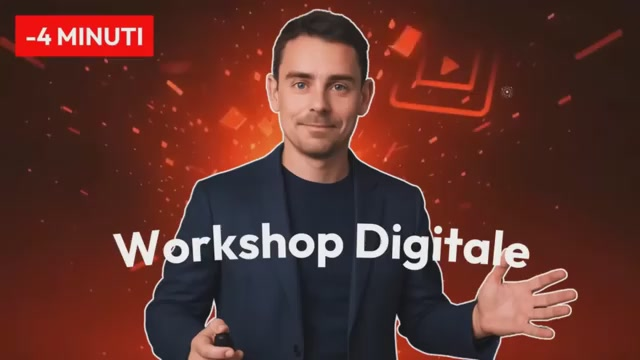
OCR: w é rkshop Digita CRAS,
Scopri il nostro corso gratuito www.Mesmerism.Info Il nostro corso gratuito www.Mesmerism.Info
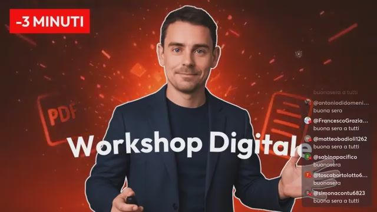
OCR: -3 MINUTI
Il nostro corso gratuito www.Mesmerism.Info Il nostro corso gratuito www.Mesmerism.Info
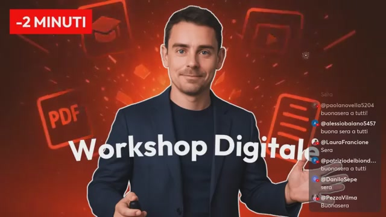
OCR: -2 MINUTI Workshop Digita
Il nostro corso gratuito www.Mesmerism.Info Il nostro corso gratuito www.Mesmerism.Info
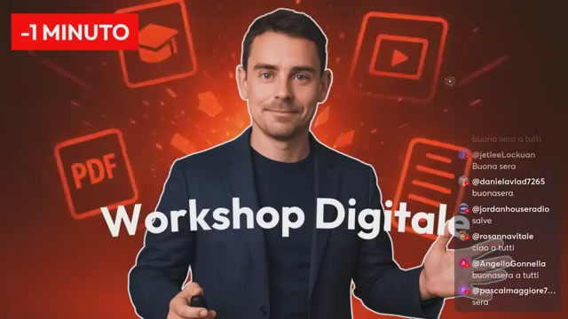
OCR: -1 MINUTO Workshop Digita
Il nostro corso gratuito www.Mesmerism.Info Il nostro corso gratuito www.Mesmerism.Info Eccoci eccoci siamo live ragazzi salve a tutti come va come va siete pronti per
OCR: | Î , 1 GUANCE Hol venne € omicheiomeloi9zi Buona crd tut ® eguigionittpo?. Scie o tutti È egiancariobredos. Tadao ® vincenzomatator.
questa tre giorni di workshop digitale allora vedo che vi state collegando siete in 250 in questo momento vi saluto tutti ovviamente aspettiamo qualche secondo che arrivano sempre i soliti ritardatari che non mancano mai. Allora ragazzi siete pronti sarà una tre giorni davvero emozionantissima perché all'interno di questa tre giorni vi spiegherò come crearvi le basi di un business basato sui prodotti digitali quindi vedremo come fare un'analisi di mercato attraverso l'intelligenza artificiale vi mostrerò anche qualche piccola particolarità della della nuova versione di ciao gpt tra l'altro è una chicca che vi volevo mostrare da tempo e che vi mostrerò oggi all'interno di questa live poi vi mostrerò un metodo nella seconda live che faremo sempre domani sempre la stessa ora vi mostro il metodo cardine per creare il prodotto digitale che spacca quindi un prodotto digitale che praticamente viene venduto e viene venduto a
OCR: 2% » - | | Lj ® grano * Buonasera o tutti O @monikadissegna. Buonasera ® @osnom cio0 o tutti — @MorwaJobin-atize Buonasera @ oFroncescoGrazia... prontissimi © oscirencorene.
palate attraverso una strategia che ha inventato il prof e che ovviamente non troverete altrove mentre invece nella terza live vedremo come si crea lo store come si portano i clienti e tanta tanta altra roba allora ragazzi ci siete datevi un piccolo check audio così controlliamo se va tutto bene io nel frattempo vi leggo qui nella chat mi sarei ragazzi se l'audio ok se ci siamo buonasera a tutti ragazzi buonasera a tutti vedo che pian piano la chat si riempie siamo in 300 in questo momento ragazzi questa sarà una live bomba quindi riguardate la vita anche qualche piccola qualche piccolo tipo qualche piccolo consiglio prima di iniziare questa live ragazzi guardatevi la live guardatela attentamente poi alla fine della live fatemi tutte le domande che volete sono qui a vostra disposizione per rispondere a tutte le vostre domande vi ricordo che lo scopo di questa live anzi lo scopo di queste tre live faremo sarà quello di spiegarvi esattamente come
OCR: È EE % IOANANDRIESb91 ciao atutti È esergiorosi Ali ok ® @vickyzummo6828 Audio ok ® epino26369 ‘audio ok P. Gledeletedai8312 qudlo da
ci si crea un business basato sui prodotti digitali ok quindi ragazzi approfittatene workshop gratuito approfittatene perché riceverete tonnellate e tonnellate di valore se siete qui molto probabilmente avete già visto qualche altro mio contenuto ok buonasera a tutti buonasera mariola come va vedo che nel frattempo vi state collegando quindi avrete visto qualche mio contenuto mi avrete visto molto probabilmente su youtube o magari avete visto qualche mia sponsorizzata su facebook avrete deciso magari di guardarvi qualche mio contenuto gratuito il mio percorso gratuito profitti digitali molto probabilmente lo avrete già studiato ecco sarà una particolarizzazione di quello che abbiamo già visto per quanto riguarda i prodotti digitali con i miei contenuti gratuiti ma entraremo ancora di più nello specifico perché vi mostrerò passo passo come fare analisti mercato come creare il prodotto digitale definitivo vi mostrerò anche qualche dietro le quinte della mia azienda quindi vi mostro qualche piccolo prodottino che ho creato e che utilizzo all'interno della mia azienda o che sto vendendo in questo momento e poi vi
OCR: ® arominosiutelnyt. ‘Buonasera D OsaivatoreNapal. Buonasera @natalelabio443 Buonasera a tutte @veronikko ‘ci90 Tindaro, ti ‘conosco da 9 anni . @Meurettatraore ‘uno era re
spiegherò anche come passare a il terzo step quindi la creazione dello store anche attraverso l'intelligenza artificiale e poi ragazzi hanno generazione di clienti questi clienti che molto spesso leggo nelle sponsorizzate nei commenti sì ma ci vogliono le azze se no ragazzi non ci vuole assolutamente nulla vi spiegherò una strategia step by step per generare vendite in organico ovviamente strategia che metto il sottoscritto e poi ovviamente vi spiegano anche come si possono utilizzare le azze ok bene bene bene bene ragazzi bene bene bene vediamo un po quanto c'è che sono a posto delle serate live il corso profitti digitali ma in realtà ben poca roba visto che quello che vi spiegherò è davvero tanta roba in più rispetto a quello che trovate nel percorso gratuito si potrà avere registrazioni non potrò guardare tutta la live romina non ti preoccupare perché queste tre live che farò oggi domani la stessa ora e dopo domani sempre la stessa ora resteranno assolutamente qui nel mio canale youtube dalla fine delle tre live per qualche
OCR: | i te serata I corso Profit Digitol? È @Alessondrofabbr.. Buonasera a tutti È Grominostutein.. © ‘4 potrà avere poi la registrazione? io non potro ‘uordore tutta la five Ri CRuggierodescisc. ‘buonasera atutti
giorno ancora dopodiché le cancellerò dal mio canale youtube perché ragazzi perché come ho detto nei miei percorsi gratuiti il miglior modo per avere successo no qualsiasi attività che non sia per forse il business ma l'amore qualsiasi aspetto della vostra vita ragazzi è fare azione e fare azione subito quindi non voglio persone che si guardano la live se ne perdono mezzo e poi dicono sì vabbè poi me la recupero il giorno del mare no ragazzi se volete avere successo in questo business dovete essere costanti e dovete avere focus qui ragazzi non troverete magheggi frasi da motivazionali da fufocolo dupaino ragazzi troverete molta pratica sono un ingegnere quindi mi piace parlare con i numeri e ovviamente all'interno di questa live vi mostro tutto vi mostro anche i numeri che si possono generare ma direi di partire aspettando ancora che si colleghino gli altri in questo momento siamo in 370 vabbè ragazzi direi di iniziare poi che arriva in ritardo si riguarda alcune parti di questa replica allora ragazzi partiamo subito con la prima serata di
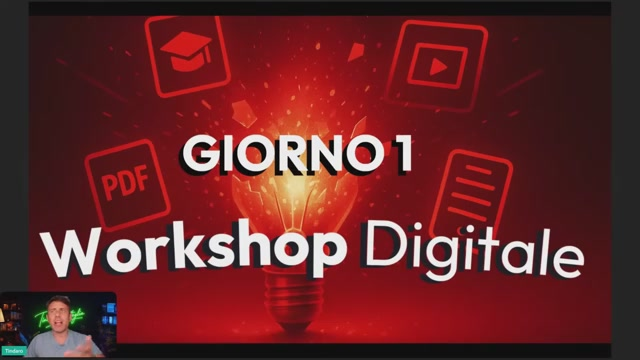
OCR: GIORNO1 Workshop Digitale Val: Llitti Mv N
questo spettacolare watch digitale allora ragazzi di che cosa parleremo oggi vedremo il
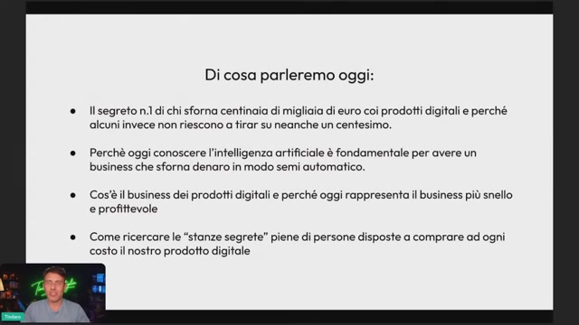
OCR: Di cosa parleremo oggi: ll segreto n.1 di chi sforna centinaia di migliaia di euro coi prodotti digitali e perché ‘alcuni invece non riescono a tirar su neanche un centesimo. Perchè oggi conoscere l'intelligenza artificiale è fondamentale per avere un business che sforna denaro in modo semi automatico. Cos'è business dei prodotti digitali e perché oggi rappresenta il business più snello e profittevole Come ricercare le “stanze segrete” piene di persone disposte a comprare ad ogni costo il nostro prodotto digitale
segreto numero uno di chi sforna centinaia di miliardi euro con i prodotti digitali e perché invece alcuni non riescono a tirare su neanche un centesimo perché oggi conosce l'intelligenza artificiale fondamentale per avere un business che sforna denaro in modo semiautomatico che cos'è il business dei prodotti digitali lo vedremo più in dettaglio all'interno di questa live perché oggi rappresenta il business più snello e profittevole ad oggi esistente e poi vedremo come ricercare le stanze segrete ovvero persone disposte a comprare ad ogni costo il nostro prodotto digitale ma ovviamente ragazzi non vi potevo lasciare a mani vuote vi ho regalato il percorso vi sto regalando queste live pieni di contenuti bene alla fine di questa live alla fine di questa lezione avrete come bonus il prompt che io utilizzerò all'interno di questa lezione per ricercare nicchie profittevole e prodotti digitali da sogno quindi restate con me fino alla fine solo chi resterà con me fino alla fine avrà il regalo questo prompt che ragazzi vedrete poi man mano che vi mostrerò in questa live come utilizzare il prompt ragazzi sarà un qualcosa di
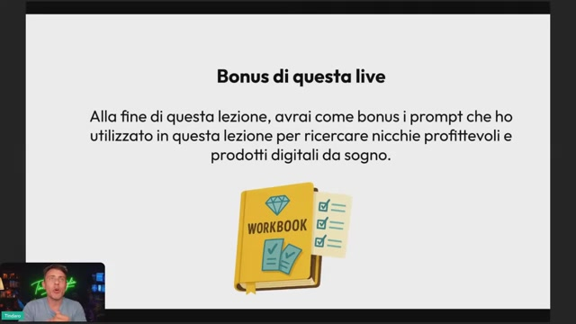
OCR: Bonus di questa live Alla fine di questa lezione, avrai come bonus i prompt che ho utilizzato in questa lezione per ricercare nicchie profittevoli e prodotti digitali da sogno. CARICA WORKBOOK
spettacolare quindi restate con me fino alla fine e ascoltate quello che da dire allora perché questo
OCR: Questo Workshop è per te se: Vuoi diventare un imprenditore digitole, generare un extra mensile dire addio ad unlavoro che fi sto stretto e che non ti permette di risparmiare nua in banca a fine mese, Sei già un imprenditore fisic/digitale e cerchi un business nell, semplice per diversificare le tue entrate. Selun libero professionista barato dal lovoro, che cerca di legare i so fempo ai sui guadagni Seluninfluencer/ereator 0 un nomade digitale che vuole reolmente fare soldi con
workshop ragazzi questo workshop è per te se sei un imprenditore se vuoi diventare un imprenditore digitale generare un extra mensile e dire addio a un lavoro che ti sta stretto e che non ti permette di risparmiare nulla in banca a fine mese quindi se sei in questa condizione hai già adocchiato qualche business già sentito di qualcosa e vuoi partire con un business online bene ragazzi questo è il business più snello e profittevole ad oggi esistente io ti spiegherò all'interno di questo workshop come si parte oppure punto numero due se già un imprenditore fisico se un imprenditore digitale e magari cerchi un business snello semplice per diversificare le tue entrate o magari sei una persona che ha già dell'expertise sei un libero professionista che ha già dell'expertise che sono monetizzabili per il mercato e vuoi creare un prodotto digitale in questo ad esempio un video corso potrebbe essere un ebook o quant'altro bene questo workshop fa per te o ancora se sei un influencer se un creator un nomade digitale che vuole realmente fare soldi
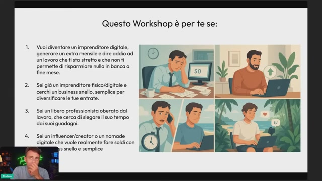
OCR: Questo Workshop è per te se: Vuol diventare un imprenditore digitale, generare un extra mensile dire addio ad nlavoro che fi sta stretto e che non i smorza: O ge LE M cerchi un business snello, semplice per diversificare le tue entrate. lavoro, che cerca di legare l suo fempo
con un business snello e semplice non ragazzi balletti su tiktok non le cazzatelle su instagram ma parliamo di soldi veri con un business vero bene se sei in questa condizione ti sei rotto le scatole dell'algoritmo di youtube di instagram che ti dà poche visualizzazioni che fai poche centinaia di euro al mese bene questo è il workshop che fa ora come detto sempre io sono totalmente trasparente con chi mi segue lo scopo di questo workshop non sarà quello di rendervi
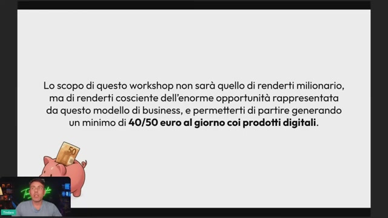
OCR: Lo scopo di questo workshop non sarà quello di renderti milionario, ma di renderti cosciente dell'enorme opportunità rappresentata da questo modello di business, e permetterti di partire generando un minimo di 40/50 euro al giorno coi prodotti digitali.
milionari ma sarà quello di rendervi cosciente dell'enorme opportunità rappresentata da questo modello di business e permettervi di partire generando un minimo di 40 50 euro al giorno con i prodotti digitali quindi il classico extra mensile ora fermiamoci un momento ragazzi chi già ha visto qualche mia live sa che io sono molto interattivo nelle mie live e mi piace un po conoscervi quindi fermiamoci un momento e scrivetemi in tre parole la vostra professione o il vostro lavoro scrivetela qua in basso nei commenti io nel frattempo sposto un attimino ok spostiamo un attimino questa slide e vediamo un po di conoscerci allora ragazzi ovviamente sono sono un ingegnere sono libero professionista sono un marketer da oltre dieci anni ma mi piacerebbe sapere un attimo quello che fate siete in 400 in questo momento vediamo un po quindi collaboratore scolastico agente immobiliare direttore negozio di abbigliamento gestore agente
OCR: @ @uovidegiannoni2. sono un produttore di @ ostetaniasortino69.... ‘gente di commercio € @michelomelani927i pulie
di commercio imprenditore avvocato cuoca mi hanno appena licenziata cavolo veronica mi spiace mamma ma ricordati che il karma potrebbe essere questo il momento migliore per guarda caso si hanno licenziato e stai scoprendo appunto questo meraviglioso mondo che il digitale quindi potrebbe essere un'ottima occasione per partire da zero imprenditore nel mondo petrolifero ciao paolo come va tutto ok spedizioniera impiegata impiegata part time insegnante precaria ciao angela come va carmen commessa ciao anche a te marisa pensionata vendita di articoli da neonati ciao monica idraulico ciao ciao antonio come va tutto ok elena aiuto cuoco ciao elena benvenuta anche a te all'interno di workshop digitale marmag savier impiegato ciò anche a te badante produttore di vino davide quindi alla fine di queste live ci regali una bottiglia per prima registro ovviamente sto scherzando agente di commercio stefania ciao benvenuta all'interno
OCR: ‘È GDIGITALFLOW-n61 Grafica digitale e consulente © orogi agente di commercio
di workshop digitale quindi michela ci dice che fa le pulizie personal coach ciao ma già stocca come va tutto ok agente di commercio prodotti food operatore del benessere manager insurance sergio di vignola mobiliere ciao sergio come va pulizie private ciao fabiana anche a te docente e fotografo ciao parrucchiera da quasi trent'anni ciao serena allora banconista in supermercato produttore musicale responsabile commerciale in azienda edile vediamo un po' ragazzi leggiamo qualche professione un po' particolare vediamo un po' prodotto formaggio ciao agata benvenuta all'interno di workshop digitale abbiamo un tecnico del suono quindi montaggio del suono ciao francesca infermiera veterinaria operato specializzato chef di cucina pro in pensione in pensione ciò anche a te partono con l'operatore col center psicologo ciao andrea sociologa giornalista formatrice olistica ciao stefania anche a te giornalista e comunicatore ciao natale come va tutto ok allora abbiamo operaio collaboratrice insomma ragazzi abbiamo davvero
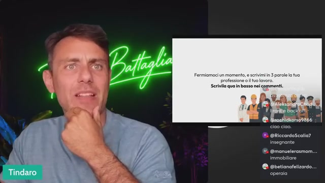
OCR: @ @betianafelizardo. operaio
le più svariate professioni vedo che siete in tantissimi oggi che mi seguite siete degli imprenditori o libri professionisti adunto tecnico massoterapia operaia programmatore panettiere educatrice bene ragazzi devo dire che le professioni sono abbinate con quello che sarà il workshop perché all'interno di questo workshop troverete davvero tanti contenuti ragazzi Contenuti che potrete applicare anche nella vostra attività lavorativa per portarla nel digitale. Quindi per generare nuovi clienti. Perché questa strategia che vi spiegherò all'interno di queste tre live vi permetterà anche, se volete, di portare la vostra professione online, totalmente online, attraverso quello che vi spiegherò. Ok? Va bene, va bene, ragazzi. Ci siamo. Siamo caldi. Il mood è caldo. Grafico pubblicitario. Customer operation manager. Ciao Giuseppe. How are you doing? Perito informatico impiegato in una azienda nell'area IT. Bene, bene, bene, bene, bene. Perfetto, perfetto. Ragazzi, ok, perfetto. Direi che il mood è quello giusto. Direi che possiamo addentrarci all'interno del nostro workshop.
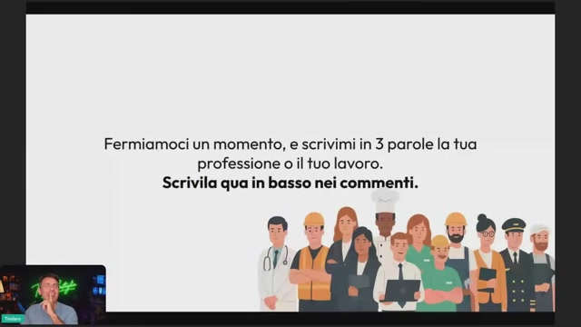
OCR: Fermiamoci un momento, e scrivimi in 3 parole la tua professione o il tuo lavoro. Scrivila qua in basso nei commenti.
Ma ovviamente prima di iniziare, ragazzi, qualche piccola premessa. Punto numero uno, ragazzi, staccate tutte le notifiche. Utilizzate un piccolo foglio di carta e una penna per prendere appunti. Questo, ragazzi, è importantissimo. Perché molto spesso, ovviamente, dovendo gestire la mia lezione nel workshop, non leggo le domande che mi fate in chat e quindi magari potremmo perderci qualche domanda. Quindi prendete un piccolo foglio di carta, staccate tutte le notifiche, ragazzi. Non controllate più il telefonino, non cazzeggiate con Instagram, TikTok. Lasciate stare tutto, ragazzi. Focus assoluto. Ascoltatemi e soprattutto prendete appunti. Se avete qualche domanda, segnatevi la vostra domanda perché vi ricordo che alla fine di questa prima live, ovviamente, ci sarà una sessione di domande e risposte. Sarò a vostra disposizione per rispondere a tutte le vostre domande e curiosità. Tutto quello che volete voi, ovviamente. Inerente all'argomento di oggi. Quindi la generazione di nicchie di mercato profittevoli attraverso il metodo che ho inventato.
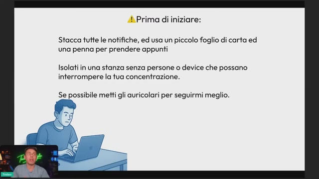
OCR: al Prima di iniziare: Stacca tutte le notifiche, ed usa un piccolo foglio di carta ed una penna per prendere appunti Isolati in una stanza senza persone o device che possano interrompere la tua concentrazione. Se possibile metti gli auricolari per seguirmi meglio.
E il metodo che vi spiegherò oggi totalmente pratico, ok? Isolatevi in una stanza senza persone, senza device, senza gatti che vi salgono sul notebook, senza cani, senza nessuno, ragazzi. Assolutamente. Focus completo. Chiudetevi a chiave. Non dovete voler sentire nessuno per questa oretta, oretta e mezza che passeremo insieme perché, ovviamente, dovete avere il massimo focus su quello che vi spiegherò. Perché, ragazzi, oggi vi spiegherò come generare nicchie di mercato profittevole e domani dovete già avere la vostra nicchia di mercato perché domani passiamo alla realizzazione del prodotto. Quindi voglio che mi seguiate passo passo e soprattutto, visto che non è il classico workshop, ragazzi, che fanno i fuffacurutubaini in cui vi imparciscono di teoria e supercazzole e poi alla fine vi sbologna nel pacchetto. No, questo è un workshop estremamente pratico. Voglio che mi seguiate passo passo perché man mano che vi spiego le cose, voi le dovete applicare. Dobbiamo arrivare alla fine della terza serata ad avere il nostro prodotto digitale pronto, nicchia di mercato pronta
OCR: al Prima di iniziare: Stacca tutte le notifiche, ed usa un piccolo foglio di carta ed una penna per prendere appunti Isolati in una stanza senza persone o device che possano interrompere la tua concentrazione. Se possibile metti gli auricolari per seguirmi meglio.
e dobbiamo essere assolutamente pronti. Ok? Bene. E poi, se possibile, mettete degli auricolari per seguirmi meglio. Ok? Ci siamo, ragazzi. Bene. Detto questo, direi che possiamo iniziare e partiamo da quella che è, diciamo, un po' la mia professione. Ok? Perché, visto che molto probabilmente molti di voi non mi conosceranno, visto che siamo in questo momento in 427,
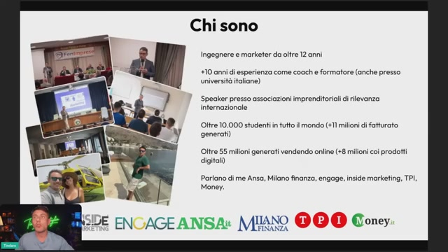
OCR: Ingegnere e marketer da oltre 12 nni +10 anni di esperienza come coach e formatore (anche presso università itlione) Speaker presso associazioni imprenditoriali di rilevanza infernazionole Oltre 10.000 studenti n tutt il mondo (+11 milion i fatturato generati Oltre 55 milioni generati vendendo online (+8 milioni co prodotti digital) Parlano di me Ansa, Milano finanza, engage; inside marketing, TP Money. Ù AGEANSA: MIANO OOO Corey
partiamo dal chi sono. Allora, ragazzi, mi chiamo Tindaro Battaglia. Sono un ingegnere e un marketer da oltre 12 anni. Quindi, pensate un po', ragazzi, ben 12 anni di onorata carriera in questo settore. Ho oltre 10 anni di esperienza come coach e formatore anche presso le università italiane. Ho fatto davvero tantissimi speech presso varie università italiane. Sono anche uno speaker presso associazioni imprenditoriali di rilevanza internazionale. Ho oltre 10.000 Studenti in tutto il mondo con oltre 11.000.000 Di fatturato che sono stati generati. Oltre 55.000.000 Generati vendendo prodotti o servizi online. Più 8.000.000, Pensate un po', ragazzi, con i prodotti digitali. Devo dire che questa piccola cifra, questa piccola cifretta, dovrei un attimino regolarla.
OCR: Chi sono Ingegnere e morketer da oltre 12 nni +10 anni di esperienza come cosche formatore (anche presso università ifalione) Speaker presso associazioni imprenditoriali di rilevanza internazionale Oltre 10.000 studentin tutto l mondo (+1 milioni i fatturato generati) Oltre 55 milioni generati vendendo online (+8 milioni co prodotti digital) Parlano dime Ansa, Milano finanza, engage; inside marketing, TP, Money. AGE ANSA: MIRANO Corey
Perché, ragazzi? Perché siamo arrivati a ben più in realtà di 8.000.000 Con i prodotti digitali. Se andate a controllare qualche piccola rivista, come ad esempio Anza, Milano Finanza, Engage, Inside Marketing, TPA o Monei, vedrete che sono citato all'interno di alcuni articoli. Beh, in realtà, ragazzi, sono conosciuto nel settore come il prof
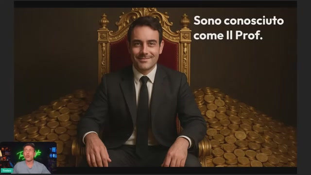
OCR: ‘è Sono conosciuto come Il Prof.
perché sono stato colui che ha fatto consulenza praticamente alla stragrande maggioranza dei formatori, alcuni meno noti, alcuni più noti, che voi sicuramente conoscerete, avrete visto magari qualche altra sponsorizzata dei formatori. Beh, ragazzi, ho fatto consulenza al business della stragrande maggioranza dei formatori che, diciamo, potrete aver trovato su YouTube, Facebook, eccetera, eccetera, soprattutto per quanto riguarda le parti di advertising e quant'altro. Beh, ragazzi, però non è sempre stata così la mia vita. Io nasco come ingegnere civile, mi sono laureato in ingegneria civile e ero convinto che dopo l'ingegneria, ragazzi, dopo la laurea in ingegneria e l'abilitazione, avrei avuto i classici ponti d'oro, clienti, studio, eccetera, eccetera. Beh, nulla di più lontano dalla realtà, ragazzi.
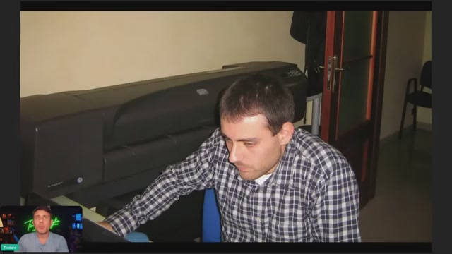
Questa è una foto che mi raffigura a mezzanotte. Avevo 27 anni, quindi ancora avevo la barbetta rossiccia. Ne è passata di acqua sotto i ponti da questa foto. Vedete il plot dietro di me che stampavo i progetti. Era circa mezzanotte e io, ragazzi, che cosa facevo? Stavo semplicemente lavorando. Stavo lavorando per terminare un progetto che, ragazzi, era un progetto praticamente infinito che mi avrebbe portato via moltissimo tempo e che poi non mi fu pagato. Poi, ragazzi, feci il libro professionista per circa dieci anni, poi a un certo punto mi ruppi le scatole, assolutamente, perché questa situazione non poteva assolutamente continuare in questo modo, per cui decisi praticamente di staccare e volgere il mio sguardo al digitale e poi nel 2016 creai la mia prima azienda, la Trevi Solutions, e poi il resto è storia. I primi fatturati, 300 mila euro di fatturato, poi un fatturato sempre più alto fino ad arrivare agli oltre 7 milioni
vendendo prodotti 100% online senza un'attività imprenditoriale fisica. Bene, perché vi dico questo, ragazzi? Iniziamo a partire per capire un attimino in che ambito ci muoviamo. Partiamo dal concetto, uno dei concetti che sbandiarono la maggior parte dei formatori, ragazzi, quello del guadagno passivo.
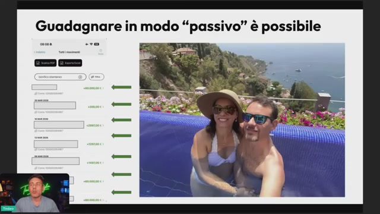
OCR: Guadagnare in modo “passivo” è possibile — — — — — — —
Ragazzi, guadagnare in modo passivo è assolutamente possibile. Io sono uno dei pochissimi formatori che, ovviamente, avendo, scusate, aziende in Italia, mostra senza problemi quelli che sono gli incassi della propria azienda. Qui, come vedete, ho qualche bonifio che arriva dal mio business, 60 mila euro, 200, 2997, 1297, 60, 60. Bene, perché vi faccio vedere questi bonifici? Ovviamente, ragazzi, non lo faccio per bantarvi, ma appunto, numero uno, per farvi capire che si può vivere digitale, il sottoscritto vive digitale ormai da tantissimo tempo, da di vendita di prodotti e servizi 100% online, ma poi perché, ragazzi, voglio sdomenare il concetto di guadagno passivo, quello che vi propinano solitamente i guru online, soprattutto quelli che fanno training, che vi dicono che senza fare nulla potete diventare ricchi. Ragazzi, guadagnare in modo passivo è possibile. Questo è il guadagno che ho fatto oltre 300 mila euro, 180, 190 mila euro, fatto in una frazione del mese,
OCR: Guadagnare in modo “passivo” è possibile i — — cs - — i
mentre contemporaneamente, ragazzi, ero con mia moglie in un bellissimo resort della mia amata Sicilia, questa è Taormina. Però, ragazzi, il concetto di guadagno passivo richiede a monte, ovviamente richiede alla base uno sforzo in termini di apprendimento, in termini di applicazioni, quello che si deve fare per avere un guadagno passivo che è enorme. Quindi, ragazzi, guadagnare passivamente non significa non fare un cazzo e vedersi i soldi piovere dal cielo, ma significa stendere le basi, porre le basi del proprio business per poi, alla fine, avere dei guadagni anche considerevoli. E come vi ho detto all'inizio, voglio essere totalmente onesto con te,
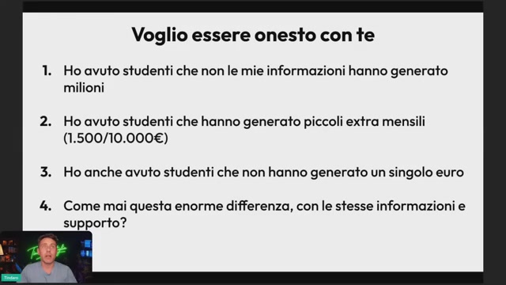
OCR: Voglio essere onesto con te Ho avuto studenti che non le mie informazioni hanno generato milioni Ho avuto studenti che hanno generato piccoli extra mensili (1.500/10.000€) Ho anche avuto studenti che non hanno generato un singolo euro Come mai questa enorme differenza, con le stesse informazioni e supporto?
io ho avuto studenti che con le mie informazioni hanno generato milioni, hanno poi aperto aziende e 100% in Italia hanno generato milioni, ho avuto studenti che hanno generato piccoli e extramensili, diciamo cifre che vanno dai 1500 ai 10.000 Euro al mese, ho avuto anche studenti che non hanno generato un singolo euro. Quindi la domanda che ci si deve porre è come mai questa enorme differenza, con le stesse informazioni, con lo stesso supporto, ho avuto studenti che hanno generato milioni, hanno fatto fortuna, hanno creato aziende, ho avuto studenti che hanno generato piccoli e extramensili, tra i 1.500 E i 10.000, E ho avuto studenti che non hanno generato un singolo euro. Come mai, ragazzi, questa piccola differenza, piccola differenza in realtà, enorme differenza, tra persone che hanno guadagnato milioni e persone che non hanno guadagnato un centesimo. Ragazzi, la risposta sta nelle credenze limitanti di chi non ha mai generato un singolo euro. Quante volte l'avete sentito, ragazzi? Devi spaccarti la schiena per avere successo. Si trova tutto gratis su YouTube, questo è classico, no? Si trova tutto gratis su YouTube, non sono problema,
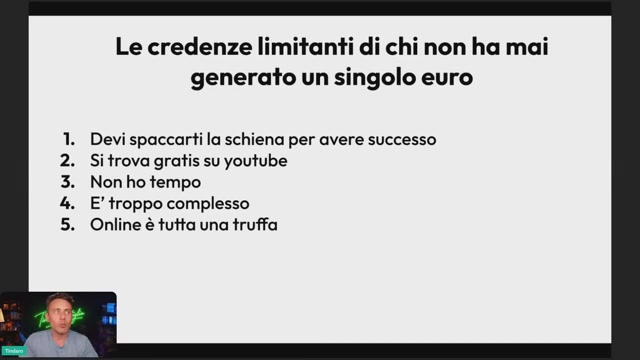
OCR: Le credenze limitanti di chi non ha mai generato un singolo euro Devi spaccarti la schiena per avere successo Si trova gratis su youtube Non ho tempo E' troppo complesso Online è tutta una truffa
oppure online è tutto una truffa, tutto quello che vedete è una truffa. Vi mostrerò, ragazzi, un mondo che è estremamente al di là della comprensione della stragrande maggioranza delle persone in questo workshop. Ad esempio è troppo complesso. Ragazzi, non esistono cose complesse, esistono cose che si sanno fare e cose che non si sanno fare. È la realtà delle cose, che ogni giorno, ogni singolo istante della nostra vita, inventiamo scuse per evitare di cambiare. Tutto parte dalla nostra mente, tutto parte dal perché voglio cambiare la mia vita. Nel mio caso, ragazzi, io ripeto, ormai ho la barbetta bianca, il mio perché non era la macchinona, io tra l'altro odio le macchine, preferisco camminare a piedi, io vado al massimo in Vespa, una bellissima Vespa GTS che mi accompagna sempre. Non era il Rolex, ragazzi, io odio gli orologi, non mi piacciono gli orologi, il massimo orologio, l'orologio più, come dire, l'orologio più costoso che ho comprato è stato un Apple Watch nella mia vita, ma il mio perché era dare un futuro alle mie figlie,
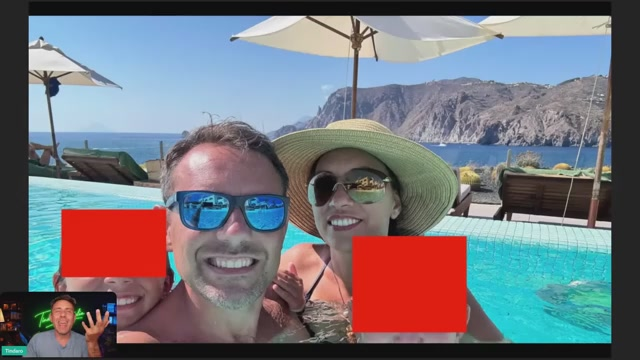
dare un futuro alla mia famiglia, poter permettere loro di avere la vita che io non ho mai avuto. Per esempio, questo è un bellissimo resort delle mie amate località, questo resort delle Isole Ole, tra l'altro è, ragazzi, una zona in cui hanno girato tanti, tanti film di Hollywood, e mi piaceva che le mie figlie potessero avere questo tenore di vita, questo stile di vita. Questo era quello che volevo. Volevo avere più tempo da dedicare con la mia famiglia senza per forza avere lo stress di poter dire non ci arrivo, non ce la faccio, non ci riesco. Il dover dire no, ragazzi, alle mie figlie mi logorava. Questo è stato il motivo che mi ha mi ha fatto dire nella testa ragazzi, basta, devo smetterla con questa professione, devo iniziare a fare qualcosa di più. Ora, scrivi nei commenti qua in basso
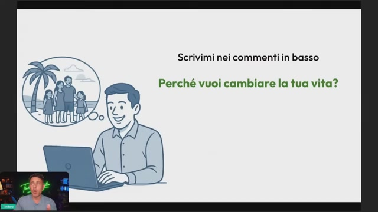
OCR: Scrivimi nei commenti in basso Perché vuoi cambiare la tua vita?
perché vuoi cambiare la tua vita. Se sei qua, molto probabilmente tu hai il tuo perché. Vorrei sentire qual è il tuo perché. Vediamo un attimino. Allora, allora. Leggiamo un po'. Allora, quanto parli? Sì, è normale, questo sarà un workshop di un'oretta e mezzo, due ore, ma vi devo mostrare alcune basi, altrimenti persone come te poi dicono stronzate e non sanno andare avanti. Ma ci interessa? Sì, ti dovrebbe interessare. Se non ti interessa il business dei prodotti digitali, puoi lasciare questo workshop tranquillamente. Tutti uguali, solide frasi fatte per due ore, sentire le stesse parole, le dico tutti quanti quando fanno live. Ma similiano, stai dicendo delle stronzate perché abbiamo iniziato a circa 20 minuti e il workshop dura un'ora e mezza e vi spiegherò un mezzo estremamente pratico. Non ti banno così. Alla fine della live mi dici se questo è un workshop uguale a quello di tutti quanti. Allora, vediamo un po'. Cominciamo bene. Il mio sogno coincide con il tuo? Penso solo al bene dei miei ragazzi.
Assolutamente, assolutamente. Allora, allora. Vediamo un po'. Non voglio cambiare, ma voglio migliorare. Per il tuo stesso motivo. Allora, facciamo una cosa. Iniziamo a bannare qualche cretino. Scusate ragazzi, ma ogni tanto arrivano. Ok. Ok. Allora, allora. Voglio essere libero. Sono stanco di lavorare per aziende che sottopagano e non ti valorizzano. Sono mamma di un bambino autistico. Fabiana, mi dispiace tantissimo, ma l'amore che si prova per i bambini è innegabilmente infinito per i propri figli. Stanco di lavorare a fine mese con l'acqua alla gola. Avere più tempo libero con la mia famiglia. Mia figlia è un'entrata extra. Volevo dare un futuro ai miei figli. Ok, ok. Avere un tenore di vita migliore. Fare il vino a troppi costi per avere finalmente tempo con la mia famiglia. Voglio avere tempo e soldi per la mia famiglia. A divorziare mi servono più soldi. Voglio avere più tempo per la mia famiglia. Lavoro 12 ore al giorno e non sono più soddisfatto. Questo è il classico problema dei liberi professionisti.
Vorrei fare ciò che mi piace. Vorrei comprare una casa nel mio paese a mia figlia e mia mamma. Vorrei rimettermi in gioco. Voglio fare il massimo alla mia famiglia. Avere la sicurezza di poter gestire il mio tempo e non dovermi limitare. Vorrei dare tutti i supporti che occorrono. Pagarmi tutte le spese tranquillamente. Quindi vedete, ragazzi. Va bene, aspettate. Paghiamo anche Option Age Academy. Ok. Aspetto. Intanto, ragazzi, nel workshop lo vedrete. Anche perché vi parlerò nelle tre live di come generare clienti. Ci sono i classici cretini che cedono per fare valdoria. Voglio migliorare la mia vita mentalmente e poter avere un futuro benestante. Anch'io per i miei tre figli. Ciao Dart, come va? Tutto ok? Avere più soldi e tempo libero. Troppo stretto una situazione in cui mi trovo. Voglio cambiare. Garantire un futuro tranquillo. Lavoro 21 ore al giorno. Più tempo, più libertà. Quindi, ragazzi, come vedete la stragrande maggioranza di voi ha praticamente il mio stesso perché. Quindi non vogliamo, ragazzi,
OCR: @ 006411009 vorrei dre uno stblità aconomica ‘ll mia famigli, senza lavorare 10/12 ore ol giorno e non ‘avere tempo per ie bimbi
una vita al di fuori delle righe. Ma vogliamo qualcosa che ci permetta di poter trascorrere il nostro tempo con le persone che amiamo e soprattutto trascorrere il nostro tempo nel modo migliore possibile. Senza dover per forza privarci di qualche cosa. Ok? Allora, ragazzi, vediamo un po' di partire con la ciccia. Ok? Allora, trend del mercato globale dei prodotti digitali. Ragazzi, il trend del mercato globale è in continua scesa perché vi ho detto che il business dei prodotti digitali ad oggi è soprattutto il più profittevole. Se andiamo a guardare quella che è la curva che rappresenta il mercato dei prodotti digitali in miliardi di euro, come potrete vedere, ragazzi, siamo partiti nel 2016 da circa 12.7 Miliardi. Si stima che nel 2030 arriverà a oltre 436 miliardi di euro. Ma anche nel 2040, ragazzi, una crescita esponenziale con 3643 miliardi di euro.
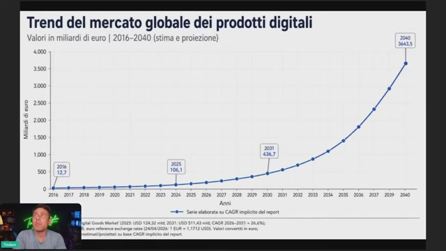
OCR: Trend del mercato Feo cel prodotti digitali
Quindi ragazzi, siamo in un momento in cui inizia il tutto. Siamo in un momento in cui inizia il tutto. Siamo nel momento in cui possiamo sfruttare l'inizio di questo spettacolare business. Siamo, ragazzi, in un momento in cui il business sta nascendo e c'è una domanda che è sempre più alta. Però dovete capire una cosa. Perché fino al novembre 2022 il business dei prodotti digitali non era reddirizio come altri. Come ad esempio il dropshipping, l'affiliate marketing. Per chi non lo sapesse, io sono stato colui che ha portato il business delle affiliazioni in Italia. Sono stato colui che l'ha letteralmente, ragazzi, diffuso su larga scala. Ho creato decine e decine di persone che guadagnano milioni e milioni di euro con le affiliazioni. Direi anche qualche centinaio. E l'ho portato su larga scala in tutta Italia. Fino al novembre 2022, ragazzi, altri business erano di molto superiore al business dei prodotti digitali. E io facevo, contemporaneamente, vendevo prodotti digitali. Contestualmente facevo affiliate marketing. Poi che è successo?
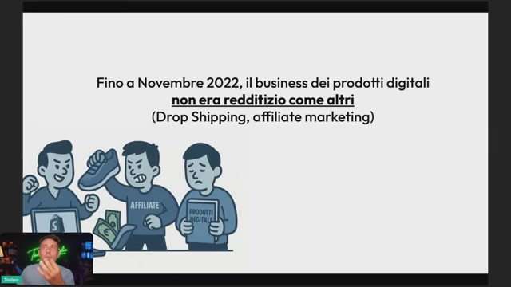
OCR: Fino a Novembre 2022, il bi non era red
È successo che mentre nel 2022, fino al novembre 2022, questo business, quello dei prodotti digitali, non era reddirizio come altri. Perché? Perché dovevi avere conoscenze in qualche campo. Dovevi saper scrivere ed avere padronanza di lingue straniere. Dovevi delegare un freelancer e dovevi aspettare mesi per avere spesso un prodotto mediocre. Era l'era dei cosiddetti prodotti digitali 0.0. Cioè il prodotto da dove lo studia tu, oppure dovevi delegare un freelancer, ragazzi. Era molto spesso un problema.
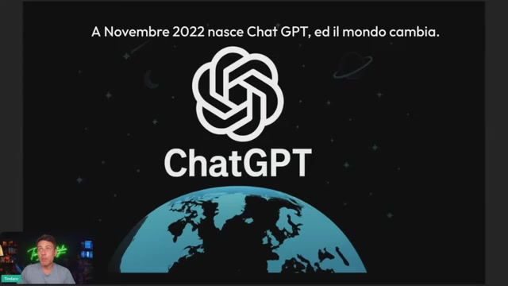
OCR: A Novembre 2022 nasce Chat GPT, ed il mondo cambia. ChatGPT
Poi che è successo? È successo che a novembre 2022 nasce, cioè GPT, e il mondo cambia. Perché, ragazzi, il mondo cambia? Beh, il mondo cambia perché con l'avvento delle intelligenze artificiali, che succede?
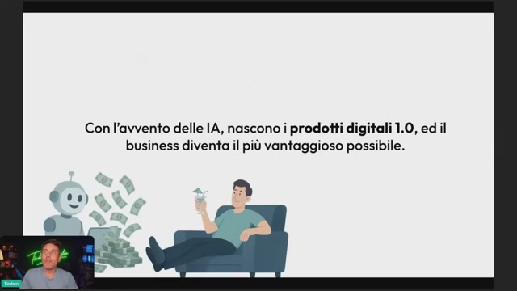
OCR: Con l'avvento delle IA, nascono i prodotti digitali 1.0, ed il business diventa il più vantaggioso possibile.
Succede che nascono i prodotti digitali 1.0 E il business diventa immediatamente il business più vantaggioso possibile. Perché, ragazzi? Perché con l'intelligenza artificiale, beh, non devi avere conoscenze particolari, non devi delegare alcun freelancer, non devi aspettare mesi e il budget di partenza è estremamente basso. E poi, ragazzi, create il prodotto digitale una singola volta e poi lo vendete praticamente milioni di volte. La scalabilità di un prodotto digitale non ha assolutamente uguali con i prodotti fisici. Il prodotto fisico, ragazzi, ogni volta che lo vendete dovete sostenere delle spese. Sono le spese relative alla realizzazione o all'acquisto, se fate dropshipping, del prodotto fisico. Ogni invece prodotto digitale che create diventa un asset che rigenera denaro nel tempo. Quindi immaginate il prodotto digitale come i dividendi di una rendita immobiliare ma
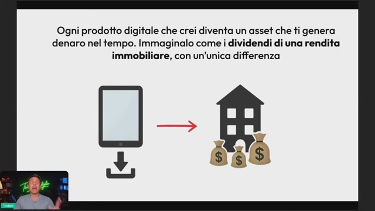
OCR: Ogni prodotto digitale che crei diventa un asset che ti genera denaro nel tempo. Immaginalo come i dividendi di una rendita immobiliare, con un'unica differenza
con un'unica differenza. Con i prodotti digitali è come se creaste la vostra casa in pochi istanti e a costo zero. E cosa ancora più bella, li vendete senza mai mostrare il vostro volto.
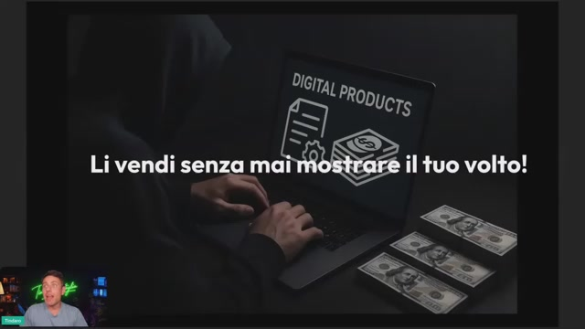
OCR: Dior, PRODUCTS S = 3 Li vendi senza maî Li il tuo volto! ® <> De: a
Quindi non dovete per forza mostrare il vostro volto, non dovete per forza creare il vostro personal brand. Siete in Tinder, ma io vorrei mostrare il mio volto. Bene, non vi preoccupate perché all'interno di questo workshop vi mostrerò anche come vendere prodotti digitali creandovi un vostro personal brand. Quindi seguitemi in questi tre giorni live.
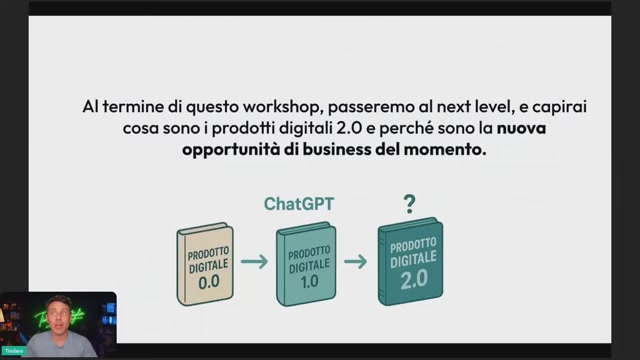
OCR: Al termine di questo workshop, passeremo al next level, e capirai cosa sono i prodotti digitali 2.0 e perché sono la nuova opportunità di business del momento. ChatGPT
Al termine di questo workshop passeremo al next level. Quindi capirete esattamente che cosa sono i prodotti digitali 2.0 E perché sono la nuova opportunità di business del momento. Ma prima di andare avanti, vediamo un attimino di capire che cosa sono i prodotti digitali. Perché qualcuno molto spesso scambia, ecco vedo qualcuno che mi dice con l'intelligenza artificiale i prodotti digitali sono meno richiesti, ormai sono tutto gratuito, con Geminio c'è GPT. Ecco Raffaella, scusami ma questa è una stronzata. Perché il prodotto digitale non significa ebook, il prodotto digitale significa template, significa checklist, significa software che puoi creare al 100% con l'intelligenza artificiale e ti assicuro che per quello che vendiamo noi, il prodotto digitale anche tipo ebook è estremamente richiesto. Perché la gente non vuole affaticarsi, preferisce avere delle informazioni che siano pacchettizzate e pronte per risolvere un determinato problema piuttosto che andare a cercare search GPT e poi magari gli darò una risposta automatica, molto spesso gli darò una risposta sbagliata. Perché? Perché non sanno utilizzare l'intelligenza artificiale al meglio e io vi spiegherò come farlo.
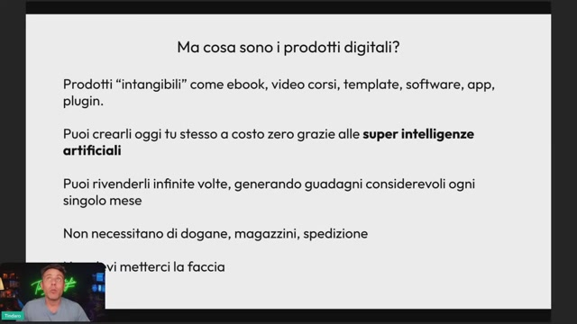
OCR: Ma cosa sono i prodotti digitali? Prodotti “intangibili” come ebook, video corsi, template, software, app, plugin. Puoi crearli oggi tu stesso a costo zero grazie alle super intelligenze artificiali Puoi rivenderli infinite volte, generando guadagni considerevoli ogni singolo mese Non necessitano di dogane, magazzini, spedizione
Quindi, che cosa sono i prodotti digitali? Sono prodotti intangibili come ebook, videocorsi, template, app, plugin, potete crearli voi a costo zero grazie alle superintelligenze artificiali, potete rivenderli infinite volte generando guadagni considerevoli ogni singolo mese, non necessitano i docane, non necessitano i magazzini, non necessitano l'espedizione e soprattutto non dovete metterci la faccia. Ragazzi, l'intelligenza artificiale sta cambiando le regole del gioco. Un tempo per creare prodotti digitali dovevate utilizzare budget e tempo. Oggi l'intelligenza artificiale permette di azzerare il tempo richiesto e minimizzare il budget. L'intelligenza artificiale quindi diventa un'opportunità laddove gli altri vedono problemi. Ok? È tempo di cambiare prospettiva ragazzi, è tempo di guardare l'intelligenza artificiale con un'opportunità prima che diventi un problema. Vedete qui ragazzi qualche articolo, per esempio questo è Wild, una famosissima rivista. BP vorrebbe licenziare migliaia di lavoratori con l'aiuto dell'intelligenza artificiale. Sarà l'intelligenza artificiale a licenziare i lavoratori?
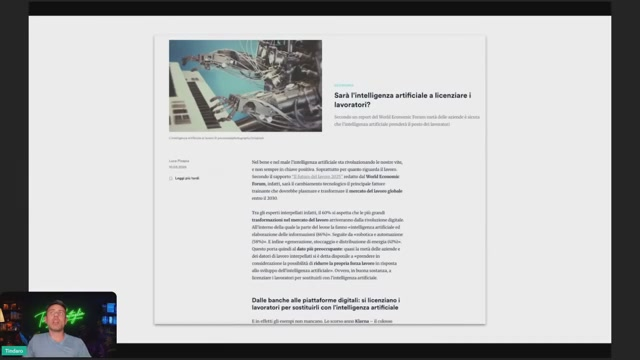
Secondo un report del World Economic Forum, metà delle aziende è sicura che l'intelligenza artificiale prenderà il posto dei lavoratori. Repubblica ragazzi, i primi licenziamenti causa intelligenza artificiale. Dalla contabilità ai corsi di lingue saltano i lavoratori. E se poi andate a cercare ragazzi AI licenziamenti, beh ragazzi vedrete che Google è pieno, strapieno di problematiche, di lavoratori che molto probabilmente saranno mandati a casa a causa dell'intelligenza artificiale. Magari questi lavoratori che erano convinti che l'intelligenza artificiale non avrebbe mai toccato nulla del loro ambiente e che quindi pensavano che l'intelligenza artificiale fosse una truffa, fosse una bolla, salvo poi essere spediti a casa. L'intelligenza artificiale ragazzi a breve renderà obsoleti molti lavori, molto probabilmente compreso il tuo. Ad esempio guardiamo questo, questa è una piattaforma di e-commerce molto famosa all'estero, si chiama Dukan, ha automatizzato il 99% delle attività di supporto pre e post vendita con chatbot gestiti tramite AI.
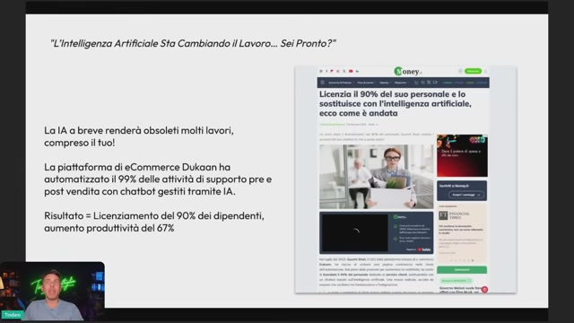
OCR: “L'Intelligenza Artificiale Sta Cambiando il Lavoro... Sei Pronto? Licenzia 90% cel suo personale e lo sostituisce con l'intelligenza artificiale, LaIA abreve renderà obsoleti molti lavori compreso i tuo! La piattaforma di eCommerce Dukoen ha automatizzato il 99% delle attività di supporto pre e post vendita con chatbot gestiti tramite IA. Risultato = Licenziamento del 90% dei dipendenti, ‘aumento produttività del 67%
Il risultato? Licenziamento del 90% dei dipendenti, aumento della produttività ragazzi del 67%. Anche Amazon, il colosso degli e-commerce, ha presentato Rufus, un assistente allo shopping basato su intelligenza artificiale. Rufus suggerisce prodotti, assiste nel pre e post vendita e anche in questo caso ha causato un aumento del licenziamento e un aumento della produttività dell'azienda. Ragazzi, è tempo di guardare l'intelligenza artificiale e apprendere come utilizzarla per fare soldi, perché altrimenti la vostra professione potrebbe passare dalla situazione
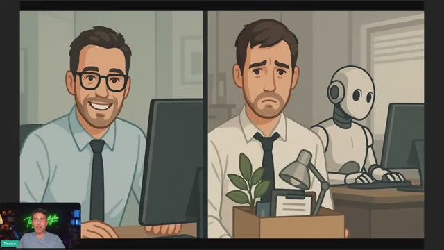
a sinistra in cui siete favolosamente impiegate e siete convinti che niente vi toccherà, fino alla situazione adesso in cui l'intelligenza artificiale ha preso il vostro posto e voi siete con il classico scatolone in mano e cercate un altro lavoro.
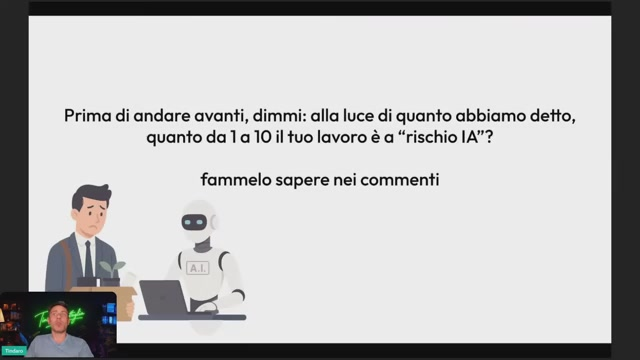
OCR: Prima di andare avanti, dimmi: alla luce di quanto abbiamo detto, quanto da 1a 10 il tuo lavoro è a “rischio IA”? fammelo sapere nei commenti
Ora, prima di andare avanti, voglio che mi diciate nei commenti, alla luce di quanto abbiamo detto, quanto da 1 a 10 il vostro lavoro è a rischio intelligenza artificiale. Fatemelo sapere nei commenti perché sarà interessante. Badate una cosa ragazzi, quando dico intelligenza artificiale non mi riferisco per forza al classico chatbot di GPT o quel che è, mi riferisco anche ad automi che sfruttano l'intelligenza artificiale per compiere dei lavori. Pensate ad esempio al fatto che Amazon sta utilizzando ultimamente dei lavoratori robotizzati basati su intelligenza artificiale per spedire pacchi, per fare confezionamento pacchi, per smaltirli in dogana. Allora, vediamo un po', vediamo un po' e ditemi ovviamente anche perché. Allora, uno, faccio un lavoro manuale. Andri, ho una notizia adatti. Ecco, come dicevo, appunto, intelligenza artificiale non significa solamente chatbot, significa anche automi che a breve prenderanno il posto di molte persone che fanno lavori manuali. Da grafico credo 8 su 10.
OCR: @ oAIckeyoa 0 @ Gonnomariadellt. o @ Gtonydimontet 2 da grafico credo 8/10
Beh, devo dire che l'intelligenza artificiale ha un po' azzoppato il settore della grafica. Graphic Designer 5, Vincenzo ci dice 7, Antonio ci dice 0. Antonio, dimmi che professione sai e vediamo un attimino. Fiorenza ci dice 10. Vediamo un po'. Ragazzi, perché mi dice 0? Ditemi perché, vi dico se è così oppure no. Abbiamo un 8. Meccanico creato 2 al massimo? Eh, non direi. Se hai competenze solide, soprattutto poteri di firma, le hai, puoi servire ad altre competenze generiche, ma non puoi generare guadagni. No, è sbagliato e ora ti dimostrerò in questa live. Anzi, ti dimostrerò in queste tre live perché è sbagliato. Allora. Essendo veramente a spero 0, ragazzi, sono automi che a breve faranno lavori manuali. Allora, vediamo un po'. Esistono già innumerabili app di fitness?
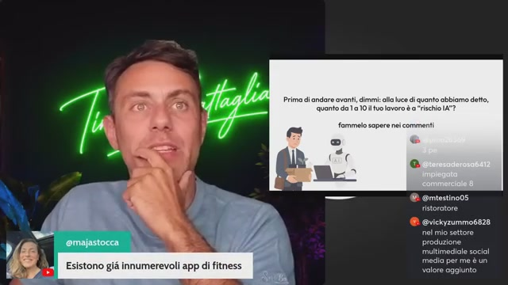
OCR: ® @rmtestino0os @vickpzummo6828 produzione Multimediale social Media per me è un valore aggiunto
Sì. Non credo sia un rischio assolutamente nel settore del marketing? Beh, direi, direi no. Ragazzi, ci sono già parecchie intelligenze artificiali, ad esempio lato meta, che già stanno facendo perdere il lavoro a tantissimi media buyer. Il settore del copywriting ormai è praticamente morto, ragazzi. Quindi direi proprio di no. Bene, bene, bene, bene, ragazzi. Ecco, il fatto che non lavori e studia all'università, l'AI, non può sostituire l'utente, anche questo. È vero. Sono un venditore, credo di essere fortemente a rischio. Già nel mio lavoro sull'AI, magari si riesce a fare bene il proprio lavoro, gestisce bene un 30% dei task. Alexandra, perché molto probabilmente non la sai utilizzare bene. Ma non ti preoccupare, perché in questo workshop ti spiegherò come utilizzarla. Bene, bene, ragazzi. Vedo che comunque ci sono diversi pareri. Mi fa piacere leggervi un po'. Continuo a leggervi nei commenti. Ma andiamo avanti, andiamo avanti con il nostro workshop digitale. Allora, prima, ragazzi, di passare al metodo per trovare il micchie d'oro, che è l'argomento
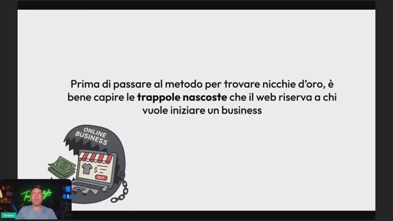
OCR: Prima di passare al metodo per trovare nicchie d'oro, bene capire le trappole nascoste che il web riserva a chi vuole iniziare un business
di questa live, è bene capire le trappole nascoste che il web riserva a chi vuole iniziare un business. Quali sono gli errori comuni di chi vuole guadagnare online? Punto numero uno, ragazzi, partire con business con costi prodotti troppo alti. Quindi partire con, tendenzialmente, prodotti fisici. Io ho anche un'altra azienda che vende prodotti fisici, ragazzi, e la mole di spese, di casini, di bordelli che sono collegati alla vendita di prodotti fisici, ragazzi, è assolutamente abilente. Le spese relative al costo prodotto sono qualcosa di assolutamente abilente. Punto numero due, vendere prodotti di scarsa qualità o cineserie. Questo, soprattutto nel dropshipping, è sentito. Quante volte avete provato a fare dropshipping o magari avete provato a vendere qualche prodottino molto spesso andando su piattaforme come Temu, Aliexpress, eccetera, eccetera. Beh, molto probabilmente, ragazzi, avrete fatto qualche piccola venda e poi sarete stati pieni di lamentere o richieste di rimborso.
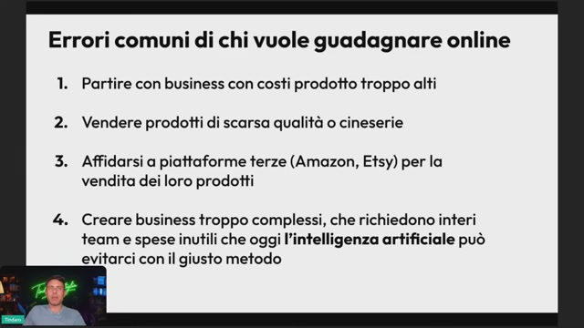
OCR: Errori comuni di chi vuole guadagnare online 1 2: Partire con business con costi prodotto troppo alti Vendere prodotti di scarsa qualità o cineserie Affidarsi a piattaforme terze (Amazon, Etsy) per la vendita dei loro prodotti Creare business troppo complessi, che richiedono interi team e spese inutili che oggi l'intelligenza artificiale può evitarci con il giusto metodo
Bene, questa tipologia di business, tendenzialmente, non funziona più. Oppure, ragazzi, questo è il problema dei problemi. Punto numero tre, affidarsi a piattaforme terze, come Amazon, Ebay o Etsy, per la vendita dei loro prodotti. Spoiler, ragazzi, all'interno di questo workshop io vi spiegherò non come vendere prodotti digitali all'interno di queste piattaforme, ma come crearsi uno store personale basato su una logica, anche in questo caso, e vi spiegherò quale logica e come crearlo. Perché, ragazzi? Perché se voi utilizzate piattaforme come Amazon o Etsy, beh, sta dando le chiavi di casa vostra a una persona che fa il bello e il cattivo tempo con casa vostra. Ragazzi, Amazon e Etsy, è inutile raccontarcela, vi bannano e vi bannano molto spesso per i motivi più inconsueti. Molto spesso non vi dicono neanche perché vi bannano e magari avete speso migliaia di euro in advertising su Amazon, Etsy o tutti questi colossi, poi a 60 giorni queste piattaforme vi pagano, entro i 60 giorni vi bannano e avete perso i soldi delle ads e vi bloccano
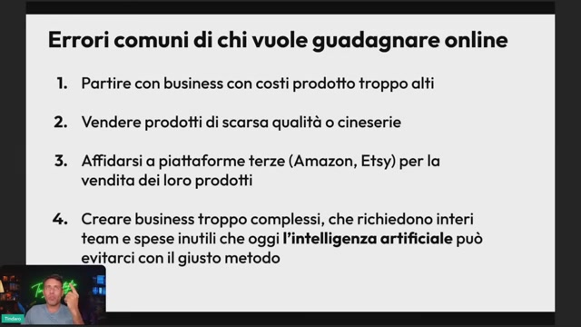
OCR: Errori comuni di chi vuole guadagnare online 1 25 Partire con business con costi prodotto troppo alti Vendere prodotti di scarsa qualità o cineserie Affidarsi a piattaforme terze (Amazon, Etsy) per la vendita dei loro prodotti Creare business troppo complessi, che richiedono interi team e spese inutili che oggi l'intelligenza artificiale può evitarci conil giusto metodo
i soldi all'interno della piattaforma. Ecco, grazie Veronica per avermi confermato quello che diceva, su Etsy mi hanno bannato ingiustamente. Ragazzi, è così, è così che funziona e quindi uno degli errori principali è iniziare il proprio business dando le chiavi del proprio business a piattaforme terze. Noi ci creiamo il nostro store, imbannabile, nessuno ci creerà problemi, vendiamo e incassiamo. Ecco, qui anche la Fenice, grazie, bannata da Amazon e perso 5K. Ragazzi, vendere prodotti digitali su queste piattaforme non è il modo migliore di iniziare perché avete un rischio che è eccezionale. Sì, ma Amazon mi permette di vendere perché è un brand. Ragazzi, stronzate. Punto numero uno, Amazon, Etsy, comunque ormai vendono su una prima pagina che è molto affollata, dovete fare delle ads come tutti quanti e molto spesso, ragazzi, avrete dei problemi in termini di ban. Queste piattaforme vi bannano e quando siete bannati, ragazzi, mandate la richiesta di sban e vi rispondono molto spesso con una mail automatica in cui vi dicono scusate ma esci fuori dalle palle, non lavori più con noi. Ed è un problema grossissimo, ok?
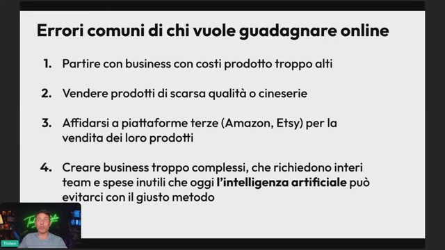
OCR: Errori comuni di chi vuole guadagnare online 1 20 Partire con business con costi prodotto troppo alti Vendere prodotti di scarsa qualità o cineserie Affidarsi a piattaforme terze (Amazon, Etsy) per la vendita dei loro prodotti Creare business troppo complessi, che richiedono interi team e spese inutili che oggi l'intelligenza artificiale può evitarci con il giusto metodo
Allora, qui abbiamo una serie di business e anche in questo caso, ragazzi, li ho categorizzati
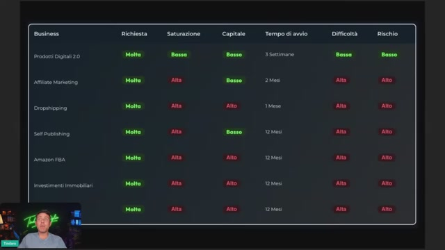
OCR: Ri Ios Richiesta Seturazione BRIKIÉESÎE : capitate Tempodiao © Dificoltà Risto dimo dee ono arc Ata dro ii CS aio roi ata nio Grim CI no rivi CI aio
per richiesta del business, per saturazione del business, per capitale investito, per tempo di avvio, per difficoltà. Ragazzi, come vedete, prendiamo ad esempio investimenti immobiliari. La richiesta, ragazzi, di investimenti immobiliari, Airbnb, quello che volete voi, è molto alta ma la saturazione, ragazzi, è altissima, quindi il business è estremamente difficile. Tradotto in soldone è estremamente difficile che riusciate a generare soldi. Il capitale richiesto è alto, il tempo di avvio è di circa 12 mesi, la difficoltà è alta e il rischio è alto, ok? Prendiamole qualcun altro, ragazzi. Self-publishing, richiesta è alta perché comunque Amazon vende miliardi e miliardi di e-book, ok? Su piattaforma Kindle. Ma la saturazione, ragazzi, è altissima. Il self-publishing ormai è estremamente salvo. Il capitale richiesto è basso, sì, ma il tempo di avvio è di circa 12 mesi per iniziare a vedere qualcosa e la difficoltà è alta oggi su self-publishing, Amazon, eccetera, eccetera. Si devono fare ads anche per decine di miliardi di euro e il rischio è alto perché, ragazzi,
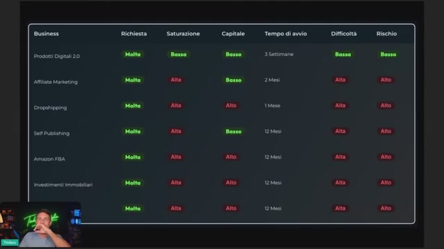
OCR: Richiesta Saturzione capitale Tempo diamo = Difioltà Rischio Stoner ema done ari A A10 dite CS Co qui CS ci rim CS ano sari CS Ao
Amazon vi banna e vi blocca. Sì, mi dite, non si legge, avete ragione, ragazzi, non si legge l'ultimo business. In realtà, ragazzi, non lo volevo far leggere perché per me trading e crypto non sono neanche un business, sono la fonte di scam numero uno, soprattutto in Italia, quando si parla di trading l'inculata è dietro l'angolo. E poi, ragazzi, il trading e le crypto, quindi trading di crypto, trading di altri materiali, azioni, quello che cacchio volete voi, non è un business perché è un gioco a somma zero. Se io guadagno qualche cosa dall'altro lato del mondo, uno o più persone stanno perdendo quella determinata cifra. Quindi non si parla di business perché quando si parla di business, tendenzialmente, il business è un qualcosa che produce valore per un mercato di riferimento. Ok?
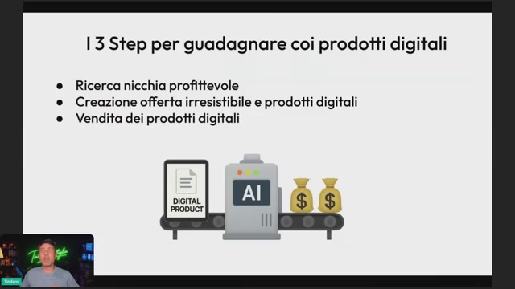
OCR: 13 Step per guadagnare coi prodotti digitali ® Ricercanicchia profittevole ® Creazione offerta irresistibile e prodotti digitali ® Vendita dei prodotti digitali
Allora, andiamo un po' al suodo e vediamo quali sono i tre step per guadagnare con i prodotti digitali. Step numero uno, ricerca della nicchia profiterola. Step numero due, creazione, offerta, irresistibile, prodotti digitali. Step numero tre, banking. Il primo passo verso un business di successo passa per la ricerca della nicchia d'oro. Nicchia d'oro significa trovare un insieme di persone che hanno un determinato problema che noi possiamo risolvere con il prodotto digitale. Dobbiamo partire da uno dei quattro macromercati. Amore, salute, soldi e spiritualità. Ricordate di questi quattro macromercati. Amore, salute, soldi e spiritualità. Dobbiamo quindi esplorare uno di questi mercati e esplorarlo per trovare la nostra stanza segreta. Che cos'è la stanza segreta? È una stanza che contiene persone che sono pronte ad acquistare il nostro prodotto digitale. Che caratteristica deve avere questa stanza segreta? Caratteristica numero uno, specificità.
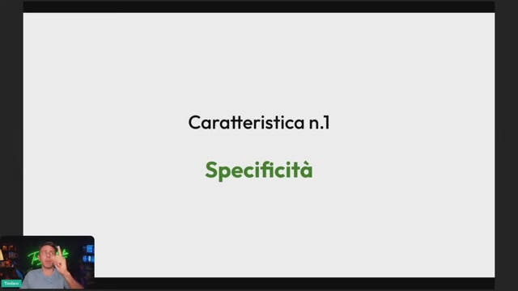
OCR: Caratteristica n.1 Specificità
Dobbiamo lavorare come cecchini, non come pistoleri. La nostra stanza segreta, ragazzi, deve essere piena di persone che hanno un singolo problema specifico. Quindi il vostro prodotto digitale deve risolvere un problema. Questo è un errore fortissimo che fa chiunque abbia un business basato su prodotti digitali, ma in realtà anche su qualsiasi altro prodotto. Pensano di creare un prodotto che risolva più problemi. No, ragazzi, deve essere estremamente specifici. Più il problema è specifico, più le persone della stanza segreta saranno disposte a pagarci. Ora, ti faccio una domanda. Se avessi un problema alla retina, quindi un problema all'occhio, quale medico sceglieresti? Voglio le vostre risposte, ragazzi, subito nei commenti. Allora, risposta A, medico di base. Quindi vi affidate a un medico di base. Risposta B, oculista pluripregnato specializzato in malattie alla retina con migliaia di operazioni successo al suo attivo. Scrivimi nei commenti quale scegli.
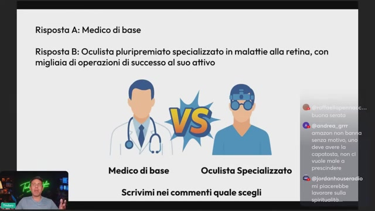
OCR: Risposta A: Medico di base Risposta B: Oculista pluripremiato specializzato in malattie alla retina, con migliaia di operazioni di successo al suo attivo a) ® ie { ' ) Medico di base Oculista Specializzato Scrivimi nei commenti quale scegli
Quindi, hai un problema alla retina, dimmi a chi ti affideresti. Eh, vabbè, oftalmologo. Bellissima risposta. Allora, medico A, medico di base. Medico B, oculista specializzato. Vediamo un po'. Naturalmente oculista. La B, food store manager grandissima bianca. Oculista. Oculista. Oculista specializzato. Ragazzi, ma è ovvio. Chi mi dice A, ragazzi, ha qualche problema e dovrebbe andarsene da un medico di base per farsi prescrivere qualcosa, ragazzi. Ma è ovvio, ragazzi. È ovvio. Deve essere un oculista specializzato. Allo stesso modo dell'esempio che vi ho fatto, badate al fatto che io, quando faccio formazione, mi piace sempre spiegare per esempio, perché l'esempio è il modo migliore, l'esempio pratico, soprattutto, che ci permette di assimilare un concetto. Perché vi ho fatto questo esempio, ragazzi?
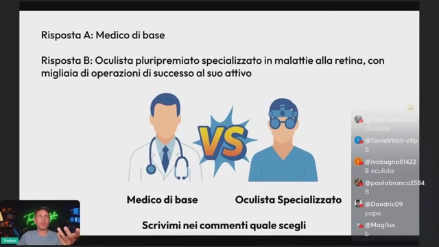
OCR: Risposta A: Medico di base Risposta B: Oculista pluripremiato specializzato in malattie alla retina, con migliaia di operazioni di successo al suo attivo nu) SB ST Ii i Medico di base Oculista Specie Scrivimi nei commenti quale scegli
Analogamente a quanto vi ho detto prima, le persone nella nostra stanza segreta devono avere un problema che possiamo risolvere in modo unico. Facciamo un esempio. Esempi di nicchie profittevoli. Come perdere peso? Ragazzi, tutti quanti vogliamo perdere peso. Inutile girarci dietro. Anche coloro che sono magrissimi, beh, un filino di grasso lo vorranno sicuramente perdere. Ok? Quindi è un esempio di nicchie estremamente generica che non funziona, ragazzi. Se voi fate un prodotto, create un prodotto digitale sul come perdere peso, ragazzi, non funziona. Guardate quest'altro esempio. Per recuperare il tuo pesoforma dopo gravidanza e allattamento. Ecco, questo funziona molto meglio perché, come vedete, è una nicchia molto più specifica di come perdere peso. Ok? Vediamo un altro. Allora, ragazzi. Come dormire bene? Tutti quanti, ragazzi, vogliono dormire bene. È una nicchia generalistica. Non funziona. Guardiamo questo. Metodi di recupero del sonno per imprenditori che viaggiano e sono soggetti a jet lag. Questo, ragazzi, funziona molto bene perché è una nicchia estremamente specifica. Ok?
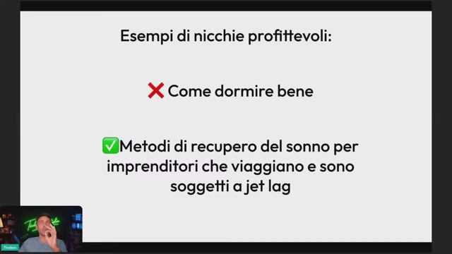
OCR: Esempi di nicchie profittevoli: X Come dormire bene QiMetodi di recupero del sonno per imprenditori che viaggiano e sono soggetti a jet lag
Vi faccio un altro esempio. Come superare un lutto? Ragazzi, anche qui, tutti vogliono superare un lutto. È una nicchia generalista. Non va bene. Guardate questo, invece. Come superare il lutto per la perdita del proprio marito dopo 50 anni più di matrimonio. Ecco, in questo caso, ragazzi, andiamo a intercettare un target estremamente specifico su cui il problema risuona e che quindi sono pronti a comprare il nostro prodotto digitale.
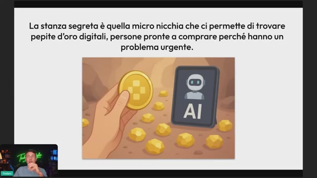
OCR: La stanza segreta è quella micro nicchia che ci permette di trovare pepite d'oro digitali, persone pronte a comprare perché hanno un problema urgente.
Quindi, la stanza segreta è quella micronicchia che ci permette di trovare le cosiddette pepite d'oro digitali, ovvero persone pronte a comprare perché hanno un problema urgente. Ora, facciamo un gioco giusto per capirci. Nominatemi in chat 10 frutti che conoscete. Vediamo un po' quello che mi scrivete. Dai, nel frattempo mi umetto le labbra. Allora, ragazzi, leggiamo un po' 10 frutti che conoscete. Allora, vediamo un po'... Allora, banana. Mango, anguria, mango, anguria. Kiwi, fichi. Forza, ragazzi, dai. Ananas. Vediamo, vediamo un po'.
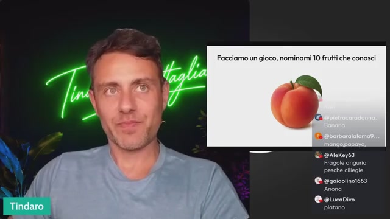
OCR: Facciamo un gioco, nominami 10 frutti che conosci È sica Frogole anguria pesche cllegie @ @g0/00/in01663 Anona @ aricodiv piotano
Banana. Platano. Platano è figo? È un frutto? Vabbè. Mirtilli, pesca. Banana, pera, pesca. Albicocca. Kiwi, anguria. Ananas, passion fruit. Noce di cocco, frutto del drago. Papaya, dragon fruit. Ananas, mela, mango, frutto della passione. Alchi, kanji. Cazzo, testino. Gran frutto. Dragon fruit. Percoca, ciliegia, pesca. Ok, sussina. Ok, ragazzi, mi piace, mi piace questi esempi che state facendo. Ma perché vi ho detto questo, ragazzi? Perché cercare la stanza segreta significa trovare frutti poco conosciuti e specifici. Quindi, la fecioia, il sapote nero, il rambutano, il salacco. Quindi, vedete, ragazzi, più il frutto è, più il frutto in questo caso,
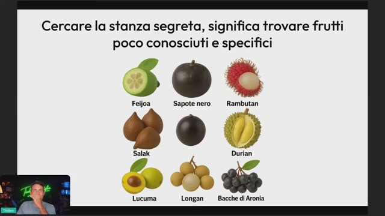
OCR: Cercare la stanza segreta, significa trovare frutti poco conosciuti e specifici DI Ro Feljoa —1Sapotenero Rambutan de O 5 La Sa Lucuma Longan — BacchediAronia
più la nicchia è specifica, più noi abbiamo la possibilità di vendere prodotti digitali in modo profittevole. Ci siamo, ragazzi? Bene. Caratteristica numero due, urgenza. Più il prodotto è urgente, più il problema è urgente, più le persone sono disposte a pagare. Ora, immagina di vendere una bottiglia di acqua, per esempio, ok? Una bottiglia di acqua, ragazzi, da mezzo litro. Ditemi un po' nella chat che valore dareste alla bottiglia e in quanto tempo una persona l'acquisterebbe, ok? Quindi, immaginate di dover vendere, ragazzi, questa bottiglia di acqua. Ditemi subito in quanto tempo la vendereste e in quanto tempo una persona l'acquisterebbe. Intanto dimmi il valore che, secondo voi, una bottiglia da mezzo litro, cioè quanto sarebbe disposta a pagarla e in quanto tempo una persona l'acquisterebbe se voi doveste vendere questa bottiglia di acqua. Vediamo un attimino. Ah, nel frattempo state ancora continuando con i frutti. Stop al telemoto sui frutti, ragazzi. Allora.
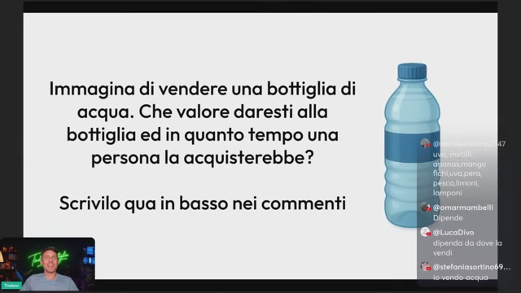
OCR: Immagina di vendere una bottiglia di acqua. Che valore daresti alla bottiglia ed in quanto tempo una persona la acquisterebbe? Scrivilo qua in basso nei commenti
Dragon dice dipende dalla sede. Senna dice dipende da dove mi trovo. Io vendo acqua. Grandissimo, Stefania. Quindi dacci una risposta. Ok. Bottiglia di acqua fresca è anche due euro. Vi leggo, ragazzi. 15 Centesimi, 27 milioni di euro in un secondo. In estate con questo caldo, così che è l'urgenza, un minuto. 50 Centesimi, un euro in pochi minuti. Ok, ok, ok, ok. Se la volete fredda, un euro, altrimenti 50 centesimi. Ah, c'è il freddo che fa la differenza. Dipende dai componenti. Il valore dipende dalla situazione. Bene, ragazzi, vedo che avete studiato. Perché in realtà quello che dite è vero, ragazzi. La risposta è dipende. Perché immaginate di vendere una bottiglia d'acqua ad un passante per strada. Molto probabilmente non riuscirete nel vostro intento. Ma che succede se invece la vendete a un beduino che si è perso nel deserto a 10 giorni nel pieno di soldi? Ragazzi, soldi.
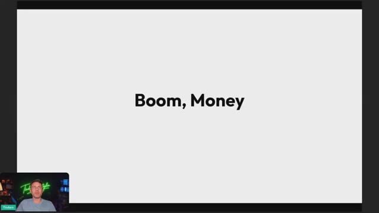
OCR: Boom, Money
Boom. Money. Ma dove sta la differenza? La differenza sta nell'urgenza che ha la persona nel voler acquistare la tua soluzione. Ok? Quindi più il mercato ha problemi urgenti, ok? Più è profittevole. Molto, molto semplice. Caratteristica numero 3. Alta domanda, bassa concorrenza. Che significa questo? Significa che dovete trovare persone che hanno un problema per il quale esiste poca o nessuna soluzione. Oppure potete trovare un angolo di attacco diverso per creare una soluzione alternativa a un problema nel quale ci sono già soluzioni. Quindi, per esempio, il classico tappo per tappare la bottiglia. Lo potete utilizzare per tappare la bottiglia. Ma potete cambiare angolo di vendita. E lo potreste utilizzare, per esempio, come un taspilli. Ok? Ma come si ricerca una nicchia, in pratica, con l'intelligenza artificiale? Ragazzi, volete vedere come si cerca una nicchia con l'intelligenza artificiale? Se lo volete vedere, ragazzi, scrivetemi bomba nei commenti e iniziamo a fare un po' di pratica.
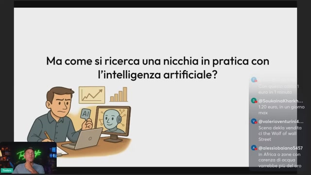
OCR: Macome si ricerca una nicchia in pratica con l'intelligenza artificiale?
Ok? Allora, leggiamo un po' i vostri commenti. Allora. Nel frattempo, preparo un po' di cosette che ora vi faccio vedere. Ok, ragazzi. Partiamo con la... Ok. Partiamo con... Il nostro CGPT.
OCR: ° e a 2 o A cosa lavoriamo? 5 EI setsipozeno puo + 4 za cn CIGPT Ho bomba È Eteresaderosa6412 sesvitatt + 8. |” bombasssssoagosa TIPI. Guimonaleone2629 bomba ® ©pin026369 ® @smonacontu6823 bomba
Ok, ragazzi. Allora, questo è CGPT. In realtà, questa è la versione di CGPT nuova. Come vedete, presenta due sessioni, che sono la sessione di chat e la sessione di work. Ora, facciamo una cosa e mettiamo la sessione di chat. Mi confermate, ragazzi, che vedete correttamente CGPT? Lo vedete, ragazzi? Datemi conferma. Vedete tutto? Ok. Allora, ragazzi, per utilizzare CGPT al meglio, dobbiamo basarci su un prompt. Ok? Quindi dobbiamo parlare all'intelligenza artificiale, in modo che l'intelligenza artificiale capisca esattamente cosa vogliamo ottenere e in che modo lo vogliamo ottenere. Vi parlerò meglio di come creare prompt nella live di domani, quindi non perdetevela.
OCR: ® e a 1) o Cosa c'e in programma 099 Mestea ui è @ 8 caverne ® cocsquaioni
Ma oggi vi mostro come un prompt può fare estrema differenza in termini di risposte che ci dà l'intelligenza artificiale. Allora, guardate qui, ragazzi. Io qui ho la possibilità di aggiungere file, la possibilità di creare immagini, di ricercare sul web. Vedete, tra l'altro, c'è anche la possibilità di collegare... Adesso c'è CGPT con diverse piattaforme, io l'ho collegata con qualche mia piattaforma e qui abbiamo la possibilità di dire a CGPT voglio una risposta istantanea, voglio una risposta media, voglio una risposta alto. Quindi, ovviamente, possiamo chiedere a CGPT livello di ragionamento. Come vedete, tra l'altro, l'ultima versione di CGPT è la versione 5.6 Sol, mentre invece le altre versioni a breve non saranno più disponibili. Quindi utilizziamo l'ultima versione CGPT e gli diamo un prompt, ok? Ora io incollo il prompt all'interno di CGPT e vi spiego un attimo come utilizzarlo.
OCR: e e a 2 o Cosa c'è in programma oggi?
Ok, questo prompt, ragazzi, tutti i prompt che realizzo io, sono del tipo fill in the blank. Cioè, che cosa significa? Significa che dovete semplicemente andare a modificare alcune parti e il prompt vi dà le risposte che cercate. Allora, questo è il prompt che poi vi darò alla fine come regalo. Ovviamente solo per tutti coloro che hanno seguito il workshop e che seguiranno il workshop fino alla sessione di domande e risposte, perché a breve vi dirò anche come potrete ottenere il tutto. Come vedete, qui ci sono. Ditemi, ragazzi, se riuscite a vedere bene o se vi dà qualche problema, perché è uno schermo in altissima risoluzione, non vorrei che vediate piccolo. Mi confermate, ragazzi, che si vede correttamente? Bene, vedete bene? Mi dà feedback, ragazzi. Ok, si vede perfetto. Allora, ragazzi, guardate qui. Qui cosa dobbiamo fare? Essenzialmente dobbiamo dirgli quante nicchie di mercato vogliamo.
OCR: Yi oso e Cosa c'è in programma oggi? ener dee i cche i mercato pr speiiche, tamen otto cn basca concorrenza, date 8 creazone e venia progetti tai nel mercato [EO) zano rimetgenz artica. RE Requist fondamental per oscna cha: Estrema speci: tare macro nicchie gn (es. ct menta” ico cche eta, esempio: + @ crm image 2. scr omagica ® cocaina
Per esempio, qui vi darò cinque nicchie di mercato. E poi dobbiamo dirgli, ragazzi, la geo, cioè dove vogliamo che essenzialmente ChargPT vada a fornirci la risposta. Perché, ragazzi? Una geo, cioè una località, potrà avere delle problematiche, anzi, sicuramente ha delle problematiche diverse rispetto a un'altra località. Cioè, banalmente, i problemi, ragazzi, che ci sono negli Stati Uniti sono diversi dai problemi che ci possono essere nelle Filippine. Ok? Quindi, suggeritevi una geo. Vediamo un po' di leggervi nei commenti. E vediamo di trovare delle nicchie di mercato profittevole. Io vedo poco, è troppo piccolo. Voglio fare una cosa. Allora, aspettate un attimo. Allora, allora. Così vedete meglio, ragazzi? Mi date conferma che si vede?
OCR: (i @ a 2 i char Work Cosa c'è in programma oggi? Genera] ceo dice di mercato per-spocich aemente potevo cn bassa concomenza adatte ala creazione e venta i podoti gi ei mercato SE] tzzanco rintetgenza rice. 0 equi fondamentaper esca ricci: Estrema secitità: evitare macro ich generiche (es sake mentale" 0 "conti; + meio» 0 @ EB. Adeto Project: COPERTINE VIDEO YOUTUBE x
Si vede meglio, ragazzi? Sì, così si dovrebbe vedere meglio. Ok, si vede meglio, perfetto. Ok. Allora, dai, vediamo un attimino, vediamo un po' i vostri commenti. Quindi diremo Australia, Italia. Dove cerchiamo queste nicchie di mercato? Africa. Ah, Africa è fighissima. Africa è fighissima, ragazzi. Cerchiamo Africa? Sicilia compare. Grandissimo, Simone. In Sicilia ci sono tanti problemi. Compreso la testa dei siciliani, purtroppo. Allora, allora. Africa? Dai, Africa mi è piaciuto. Cerchiamo Africa, ragazzi. Mettiamo Africa, dai. Montenegro. Montenegro mi piace. Cerchiamo Montenegro? Ditemi voi. Devo leggere. Cerchiamo Montenegro, dai, ragazzi. Vediamo che problemi ci sono nel Montenegro.
OCR: () e Q 2 o chat Work Cosa c'è in programma oggi? Genera [ide dich imerctoper-spcich; tamente potevo con asa © 51°?” concoenza dat la rezon e vendita poco gti merc BB zoo nese linteligenza artifici. ‘GEO Spogno I Requisi fondamentliper ciascuna nicchia: @ eviciyzummos88 Estrema speciiità: evitare macro-nicchie generiche (es. salute mentale” o incontr?; — * Imonezoppel?. Medio nto er per ug 2 Ve #2 @antonioperrinot720 gemonio ® eontoniogiudicion.. a EB. Adeito Project: COPERTINE VIDEO YOUTUBE
In Puglia. No, ragazzi, cerchiamo Montenegro. Mi è piaciuto l'esagerimento. Quindi qui mettiamo Montenegro. Ok? Basta. Abbiamo finito, ragazzi. Ovviamente qui selezioniamo il livello di ragionamento. Simone sceglie un livello di ragionamento. Un livello di ragionamento medio, quindi va a bilanciare, e un livello di risposta istantanea, ma la risposta sarà un pochettino più scarsa. Io qui inserisco un livello medio. Non dobbiamo fare più nient'altro, quindi come vedete la bontà del prompt sta nel fatto che una volta che abbiamo specificato queste due cazzatelle, il prompt è pronto per darci tutto quanto. Vi ricordo che questo prompt ve lo do alla fine di questa live, ma solo per chi mi segue fino alla fine ve lo ricordo. Allora, diamo questo prompt e vediamo un po' quello che ci dice. Vedete, in questo momento CGPT sta pensando, sta analizzando domande e concorrenza, sta aggiungendo anche un punteggio di opportunità. Vedete ragazzi che cosa sta facendo? Sta ricercando
OCR: 0808 “Uomini oz ver50 che cercano un nua scopo D Condivi Mostra di più v Analizzo domanda e concorrenza su fonti pubbliche recent distinguendo segnali |’ Rispondi ora reali da semplci ipotesi Aggiungerò anche un punteggio opportunità come sesta voce, visto che nell'elenco ne risuano cinque. ® Rigerca in wwwimontenegro-spircom + Fon veso» ® @
su Google Trends, sta ricercando su siti relativi al Montenegro, sta ricercando su Facebook, sui social. Questa è una caratteristica. L'ultima versione CGPT, ragazzi, devo dire, spacca, perché va a ricercare all'interno di tutti i siti che possono essere correlati quelle che sono delle possibili problematiche, per poi andarci a mostrare quelli che sono i problemi principali di questa geolocalizzazione e darci delle idee di nicchie di mercato. Ok ragazzi, vedete? Allora, premessa importante, definire una nicchia altamente profittabile a bassa concorrenza senza testare, traffico, CPL e conversioni sarebbe poco serio. Giustissimo, e questo ve lo mostrerò anche nella terza live in cui vi mostrerò come andare a convalidare l'ipotesi. Cioè, che cosa stiamo facendo, ragazzi? Con l'intelligenza artificiale noi stiamo andando a fare un'ipotesi, quindi stiamo andando a fare ricerca di mercato e andremo a scegliere una nicchia di mercato, poi vedremo se questa ipotesi funziona attraverso la nostra tesi, quindi ipotesi tesi, attraverso la vendita del prodotto digitale. Ok? Vediamo un po', vediamo un po'. Quindi, il Montenegro conta 623 mila abitanti, limitarsi esclusivamente
OCR: () @ a 2 i “Um voti SO chicane nsoseape L Conai Mostra di più v al do Elaborato per 345 Premessa importante: definire una nicchia ‘aamente prlittevole e a bassa concorrenza” senza testare raffio, CPL e conversioni sarebbe poco serio Montenegro conta circa 623.000 abitanti: Iimitarsi esclusivamente i cittadini montenegrini estringerebbe troppo il mercato La strategia più sensata è creare prodotti localizzati per Montenegro, ma vendibli anche ai residenti stranieri e, quando possible, llntera area inguistica erbo-croato-bosniaca. (TM Google Trends inoltre restituisce spesso “ati insufficienti’ per query molto specifiche in paesi piccoli. Per questo ho incrociato datistuzionali problemi documentati, community, Redelt, marketplace e presenza di offerte concorrenti. ,/}vento volumi di ricerca o numeri di hashtag. chele piataforme non rendono pubblicamente verificabili. UM + [ehiedia ChatGPT meio» € @
ai cittadini montenegrini restringerebbe di topo il mercato, quindi come vedete ci dice che è un po' problematico il Montenegro perché è abbastanza piccola come regione, la strategia più insensata è creare prodotti digitali localizzati per il Montenegro ma vendibili anche a residenti stranieri quando possibili all'intera linguistica serbo-croato-bosniaca. Google Trends restituisce spesso dati insufficienti per quelli molto specifici in paesi piccoli e insomma, ragazzi, come vedete, già ci sta dicendo, per esempio, che il mercato, ci sta dando, ragazzi, una informazione importantissima, ci sta dicendo che il mercato del Montenegro, un mercato estremamente piccolo, quindi in questo caso avrebbe poco senso vendere un prodotto digitale limitandosi al Montenegro, ma facciamo una cosa, ragazzi, dai, modifichiamo questa cosa e mettiamo Africa, ok, vediamo un attimo quello che ci esce, se al posto di Montenegro mettiamo Africa, ok, allora anche in questo caso sta pensando, diamogli sempre qualche secondo per fare la sua analisi e scansione dei vari siti web, social, eccetera,
OCR: (i e Q Ci {°) eeeeeeaea ee” tramite maditzione osta I° ® Condividi Mostra dipiù Sto pensando Rispondi ora Folco veso» ® @
eccetera, vedete, sta cercando nicchie di mercato e trend nell'intera Africa, sta cercando anche su Instagram, su Wikipedia. Ragazzi, vi ricordo che prima dell'intelligenza attiviciale fare una analisi di mercato del genere richiedeva settimane, se non mesi, e una conoscenza che era assolutamente improponibile per la maggior parte delle persone. Oggi basta conoscere bene l'intelligenza attiviciale. Che significa, ragazzi, conoscere bene l'intelligenza attivicale? Significa saperci dialogare con i giusti prompt e l'intelligenza attiviciale riesce fuori delle cose che ancora oggi, vi giuro, mi fanno cadere la mascella per terra. Vedete, già ci dice che emergono già due opportunità più solide, le classiche nicchie e i fattori online, supporto alla menopausa o progressione localizzata, decisioni di coppia legate al genotipo falcemico. Entrambe combinano dolore concreto, conversazioni attive e offerta
OCR: 0808 6 mar ® Condividi +» e Mostra di più v Valuto opportunità real in diversi mercati frcani, evitando di trattare Africa come un. Rispondi oca unico mercato omogeneo. Conlronterò domanda, concorrenza e capacità di spesa, poi slezionerò slo cinque micro-nicchie difenciil ® Ricercato mercati endenza diccha in Arca Q Varo richie ® Cercato tendenze e informazioni su diverse piattaforme online Emergono già due opportunità pù soll ell classiche nicchie “fare sof nine": supporto ala menopausa professionale localizzato e decisioni di coppia legate al genotipo falcemico. Entrambe combinano dolore concreto, conversazioni atte e offerta digitale locale ancora frammentata. ca inetflesetsycom
digitale e locale ancora frammentata. Vedete, sta continuando a ricercare all'interno di siti specializzati. Ok, ci dice, per me è importante. Africa non è un mercato singolo, lingua, potere di acquisto, sistema di impiegamento, cultura e maturità digitale cambia radicalmente tra Nigeria, Kenya, eccetera, eccetera. Ok. Nessuna ricerca esterna può dimostrare l'anticipo di una nicchia altamente profittevole. Va bene, passiamo a quelle che sono le nicchie di mercato. Nigeriani, contratto falcemico AS che devono affrontare il tema del genotipo durante una relazione seria. Quindi, questo è il mercato dell'amore. Ragazzi, guardate che bomba di nicchie di mercato ci ha trovato. Target, uomini e donne nigeriani o dell'Africa occidentale, circa 23-38 anni, con genotipo AS, AC o altra variante rilevante che stanno iniziando una relazione seria o considerando il matrimonio. Sono prevalentemente urbani, istruiti digitali, frequentano Instagram, TikTok, YouTube, Reddit. Qual è il problema urgente? Non sanno quando comunicare il proprio genotipo, come chiedere il test al partner senza apparire freddi, cosa fare quando entrambi risultano AS, come distinguere schiomedico,
OCR: 0808 6 \dl Sono prevalentemente urbanisti digitali Frequentano Istagram TTok YouTube, ® Cond forum sul matrimonio, community religiose e gruppi WhatsApp. Spesso cercano informazioni soltanto quando la relazione è già emotivamente avanzata. Problema urgente Non sanno: quando comunicare proprio genotipo; come chiedere est al partner senza appari freddî cosa fare quando entrambi risultano AS; + come distinguere rischio medico, pressione familiare e decisione personale; » comealfrontre possibi rotture, matrimonio adazione 0 alte opzioni produttive. Non è un dolere teorico! sono presenti discussioni recanti di coppie che scoprono di essere entrambe AS dopo anni relazione 0 durante la preparazione dl matrimonio. Anche studi igeriani hanno esaminato conoscenza e adozione dello screening prematrimoniae. «i Prodotto digitale consigliato = di +. chedacnaseT rito 0 @®
eccetera, eccetera. Ok. Ci dà anche il tipo di prodotto digitale consigliato. Ragazzi, guardate che bomba. Guardate quante informazioni. Io resto davvero scioccato, ragazzi. Resto scioccato dell'amore di informazioni che un prompt fatto bene può restituire in pochissimi secondi. Prodotto digitale consigliato. Un percorso digitale chiamato per esempio Genotype Before Commitment, composto da minicorso, video-audio, script per affrontare la conversazione, checklist prematrimoniale, diario di segnale di coppia. Insomma, ragazzi, l'intelligenza artificiale ti ha detto anche che tipo di prodotto digitale creare per questo target di mercato e soprattutto il prezzo iniziale. 15-39 Dollari. Ci dà anche un upsell, vedremo in seguito che cos'è l'upsell, perché ne parleremo, non vi preoccupate. Ok? Vediamo qualche altra. Professionista e cagnote di 42-55 anni con brain fog e ansia lavorativa durante perimeno pausa. Anche in questo caso ci dà come target donne in aerobi, mombasi e altre aree urbane, impiegate, manager professionisti, imprenditrici e lavoratrici di remoto, lavoratrici
OCR: durante la perimenopausa Mercato principale: salute. È Condividi + Target Donne di Nairobi Mombasa e altre aree urbane, 42-55 annì.impiegate, manager, professioniste, Impreniii lavoratrici da remoto. 0808 6 ‘Sono abituate a usare smartphone, WhatsApp, Facebook, nstagram, YouTube e podcast. Hanno un edito superiore alla media locale, ma spesso non associano problemi di concentrazione, imtabilà insonni e calo dell performance all permenopausa. Problema dtgente Temono di *. perdere lucidità durante riunioni e presentazioni: apparire meno competenti dimenticare attività e scadenze; v compromettere la carriera; * 2 SH + ChediaChaGPT veso- ® @
da remoto, scusate. Problema urgente, temono di perdere lucidità, apparire meno competenti, dimenticare attività escadenze. Testimonianze provenienti dal Kenya, destino precisamente brain fog, ansia, insonnia, sbalzi d'umore. Qui in generale in Africa stanno crescendo comuni ed iniziali per rompere lo stigma sulla meno pausa. Vedete, qui ci dà anche la fonte e possiamo leggere l'articolo, in questo caso l'articolo direttamente dal The Guardian, che è un sito estremamente autorevole. Vediamo qualche altra. Qui ci dà il prodotto digitale, un programma chiamato Clear Mind at Work Kenya, con audio guide da 5-10 minuti prima delle riunioni, planner digitale, eccetera, eccetera. Vedremo come creare il tutto nella live. Numero due, domanda via sconcorrenza, domanda medio alta e crescente, concorrenza locale bassa. Qui ci dà anche qualche corso generico sulla peri, meno pausa, suezi, numerosi, tracker e planner, ma la maggior parte è anglosassine. Qui ci dà già la ricerca che ha fatto anche
OCR: 0808 6 Domanda vs concorrenza ® condividi + Domanda: medio-alta e crescente. Concorrenza locale: bassa. ll Kenya contava 23,4 mini di tenti intemet e 18,4 mini di identità social ll fine del 2025, creando una base suiientemente ampia per prodotti moble-frst. (ia Su Udemy sono present cr generic sula menopausa su Etsy numerosi tracker panna ma tamaggIO pato è anglosassone, generica e no focalizzata su profesionte acne, contesto avra keniota, sta cure o uso trame WhatsAp. @ La concorrenza globale esiste; la concorrenza iper: © >! hl do Perimenopause Planner Digita, Menopause Symptom Tracker, HAT Hormone Journal, Hot Flash Tracker, 19 maggio 2026 — * Image: May Include: A laptop 3.Donne sudafricane divorziate 0 vedo. screen displays a restment plan interface with the te al dating evitando romance scam e tx iipolazioni finanziarie Valutazione opportunità: ,5/10. ug Mercato nrincinale: azioni icunezza finanziaria i nego 9 @
su Etsy e ci dice anche i prodotti digitali che sono presenti su Etsy. Questa è Udemy, una piattaforma di corsi, top meno pausa online. Vediamo un pochettino quello che ci dà. Ovviamente da me cerca su Udemy. Guardate qui, ragazzi. Vedete qui la scheda. Questa è una piattaforma
che vende corsi e come vedete c'è mercato. Qui abbiamo 209 recensioni, 148 recensioni, 132 recensioni, 97, 82, 64, 50. Insomma, ragazzi, c'è abbastanza mercato per questo genere di prodotto, ma in realtà ci parla anche di Etsy se andiamo a considerare quello che
OCR: Domanda vs concorrenza ® condividi + Domanda: medio-alta e crescente. Concorrenza locale: bassa. ll Kenya contava 23,4 mini di tenti intemet e 18,4 miloi di identità social alla fine del 2025, creando una base suicientemente ampia per prodotti moblefirst. (iaia Su Udemy sono presenti corsi generic sulla menopausa e su Etsy numerosi tracker è planner, ma la maggiorparte è anglosassone, generica e n focalizata su professioniste africane, contesto lavorativo keniota, sigma culturale e uso tramite WhatsApp. ali 0LO0R 6 La concorrenza globale esiste a concorrenza iper-ocalizzata e professionale è ancora debole. Valutazione opportunità: ,5/10. 3.Donne sudafricane divorziate o vedove, 45-65 anni, che vogliono tornare al dating evitando romance scam e i W\ipolazioni finanziarie “ag Mercato princinale lazione sicurezza fmanziaria, n° SH + chiegiaChatGeT Modo 0
OCR: The planner for perimenopause bodies. e
è il prodotto del planner per il meno pausa bodies. Ovviamente noi stiamo facendo un'analisi del mercato e andiamo a controllare se esistono prodotti analoghi anche in queste piattaforme, ma non utilizzeremo queste piattaforme. Vogliamo solamente capire se esistono già prodotti o prodotti digitali che stanno vendendo anche in queste piattaforme. Donne sudafricane divorziate
OCR: Domanda vs concorrenza ® Condividi + Domanda: medio-alta e crescente. Concorrenza locale: bassa. Il Kenya contava 23,4 mini di utent intemet e 18,4 milioni di identità social all fine del 2025, creando una base suicientemente ampia per prodotti moble-fst. (i ‘Su Udemy ono presenti corsi generic sull menopausa e su Etsy numerosi racker è planner, ma a maggior parte è anglosassone, generica e non focalizzata su professioniste africane, contesto lavorativo keniota, sigma culturale e uso tramite WhatsApp. 0L8O0R 6 La concorrenza globale esiste; a concorrenza iper-lcalizzata e professionale è ancora debole. Valutazione opportunità: 85/10. 3.Donne sudafricane divorziate 0 vedove, 45-65 anni, che vogliono tornare al dating evitando romance scam e i \bipolazioni finanziarie vg Mercato princiole relazioni e sicurezza finanziari 2 8 + ChiediaChatGPr Medio » 9 (0)
o vedevole 45-65 e vogliono tornare al dating, agli incontri, evitando romance, scam e manipolazioni finanziarie. Anche questo, per esempio, vogliono ricostruire la propria vita sentimentale, ma rischiano catfishing, richieste di denaro, finti investimenti, da quelle parti sono altamente probabili. Anche in questo caso abbiamo le fonti di quello che ha trovato, ragazzi, davvero una bomba, di quello che ha trovato su GPT, un kit chiamato Date Safely South Africa, che potremmo creare tra i 25 e i 79 dollari. Domanda concorrenza, domanda alta concorrenza, bassa moderata, ha trovato qualcosina. Venditrici di francofone, di cosmetici, modi e prodotti artigiani che lavorano quasi esclusivamente tramite Whatsapp, mercato dei soldi. Donne di 25-45 anni in Costa d'Avorio, Senegal, Benin e Togo che vendono abbigliamento, cosmetici e accessori tramite Whatsapp. Questa è una bella nicchia di mercato per la quale fare un prodotto digital,
OCR: lavorano quasi esclusivamente tramite WhatsApp ® Condividi + Mercato principale: sold Target Donne di 25-45 anniin Costa d'Avorio Senegal, Benin e Togo che vendono abbigliamento, cosmetici accessori, prodtti mentari artigianato tramite WhatsApp Status, Facebook e tnstagram. Lo 0808 6 ‘Spesso gestiscono tutto da sol: + foto; + descrizioni: *. risposte al centi ordini + folon-up; pagamenti v + promozioni. kJ ld MUTE. ChiegiachcPT ves 0 @
ragazzi, segnatevelo perché è molto carina. Vi sto anche regalando, ragazzi, una nicchia di mercato bomba, dai. Problema urgente, ok, prodotto digitale consigliato, Whatsapp vent ia francophone, con un mini corso in francese semplice, vedete che in questo caso ci dice anche la lingua, libreria di prompt, modelli per Whatsapp business, cataloghi camba modificabili, sequenze di follow up, script per vocale di vendita, foglio, ordine automatizzato, generatore di offerte, micro robot, tutte cose che potete realizzare con l'intelligenza artificiale, ok? Ragazzi, fighissimo, barbieri, hairstylist e nail artist che gnoti con pubblico social ma senza entrare da sponsor o prodotti digitali, vedete? Anche qui siamo nel mercato dei soldi, anche questa è una nicchia estremamente interessante, che gnoti di 28-38 anni, usano Instagram, TikTok, insomma, ragazzi, wow, voi avete capito che bomba che abbiamo lanciato semplicemente con un semplice prompt, ragazzi, questo è l'utilizzo corretto dell'intelligenza artificiale per fare analisi di mercato con il
metodo della stanza segreta. Questo prompt, ragazzi, che vi ho mostrato, un prompt molto semplice, vi permette in pochi istanti di trovare delle nicchie di mercato altamente specifiche, con problemi urgenti, che potrete utilizzare poi per vendere il vostro prodotto digitale. Ci siamo fin qui, ragazzi? Quindi questo è il modo corretto di utilizzare l'intelligenza artificiale,
OCR: Ma come si ricerca una nicchia in pratica con l'intelligenza artificiale?
ovviamente potete utilizzare cioè GPT, così come FLOAD, quello che volete voi, ma non è finita qui perché, ragazzi, come bonus di oggi, come regalo per aver partecipato a questa live, come vi dicevo, eccovi il workbook più il prompt del valore di 97 euro gratis per voi, ok? Quindi stasera, ragazzi, io vi regalo il workbook riassuntivo che dovrete chiedere al vostro consulente, se non ne avete uno, digitate tinderebattaglia.Com slash go slash whatsapp, c'è anche un commento bloccato nella chat, fatemi vedere se si è bloccato o se ci sono, sì, dovrebbe essersi bloccato, ragazzi, datemi conferma che nella chat c'è, sì, c'è un mio messaggio e c'è un link, se lo cliccate, se non avete il consulente, ragazzi, contattate il vostro consulente, se avete il vostro consulente,
OCR: Bonus di oggi Come regalo per aver partecipato a questa live fino alla fine, eccoti un workbook + Prompt del valore di 97€, gratis per te. Potrai richiederlo al tuo consulente. Se non hai uno digita tindarobattaglia.com/g0/whatsapp
contattatelo, come prima cosa chiedete il workbook, compilatelo, sono cinque domande, giusto per capire se avete compreso appieno gli argomenti di oggi, perché, ragazzi, perché domani dobbiamo passare alla realizzazione del prodotto digitale, c'è il link, contattate un consulente, sono a vostra completa disposizione, compilate le vostre domande, le cinque domande e date le risposte, dopodiché ribussate il consulente e ditegli, ok, ho compilato il workbook, ora dammi il prompt che Tinder mi ha promesso, e il consulente vi darà automaticamente il prompt con, appunto, il prompt bonus per fare l'analisi di mercato. Ragazzi, fate l'analisi di mercato perché, ovviamente, domani dovete già avere la vostra analisi di mercato pronta, dovete avere già il vostro target ben in mente, perché domani vediamo come si crea il prodotto digitale collegato alla micchia di mercato che avete scelto. Ora, vi devi passare a una sessione di domanda e risposta giusto
per rispondere a quelle che sono le vostre domande, quindi sono a vostra disposizione. Quindi, vi elavate e segnate, ragazzi, le domande da fare nel foglio di carta e penna, apriamo i commenti e vediamo un po'. Sì, ragazzi, è questo. Quindi, se non avete un consulente, cliccate, andate nella barra degli indirizzi e cliccate su tinderbattaglia.Com slash go slash whatsapp per accedere a un consulente. Ok? Allora, vediamo un po'. Credo che, però, oltre a un'anicchia definita, profiteroci con un test di mercato e il valore del prodotto. Assolutamente sì, Antonio, perché, ripeto, come ho detto prima, noi possiamo fare, ragazzi, le ipotesi più forti del mondo, ma poi le ipotesi devono scontrare con il mercato. Quindi, noi troviamo un'anichia di mercato, facciamo un test per capire se abbiamo vendite, se abbiamo segnali positivi che possono essere vendite o aggiunte al carrello. Allora significa che il test è stato passato con successo e iniziamo a costruirci tutti i nostri prodotti collegati con l'anichia di mercato. Ok? Molto semplice.
OCR: Credo però che oltre alla nicchia definita profittevole...ci vuole un test di mercato che valida il prodotto.
Sì, sì, ragazzi, c'è il link. È un commento bloccato sulla chat di YouTube. Fantastica lezione. Grazie, Tinder, e grazie anche per il regalo. Ma figura di Paolo, ragazzi, io vorrei capire se c'è il primo che diceva che questo è il solito workshop. Ora dai, forza, tu che dicevi questa stronzata? È il solito workshop o un workshop estremamente pratico? Fammelo sapere nei commenti. Allora, allora, vediamo un po'. Ma figurati, figurati. Si può utilizzare Google Gemini Pro per questo lavoro? Sì, assolutamente sì, lo puoi utilizzare. È indifferente. Devo dire, ragazzi, che oggi c'è il GPT con gli ultimi aggiornamenti è diventato una bomba. Praticamente avete un'intelligenza artificiale che costa pochissimo e che vi permette di fare davvero tantissime cose. Se dovessi consigliarvi un'intelligenza artificiale da utilizzare a pagamento, vi consiglio il GPT perché il coltellino svizzero dell'intelligenza artificiale, ragazzi, poi fa tutto mediamente bene.
OCR: si può utilizzare anche google gemini pro per questo lavoro?
Quindi fossimo voi, sì, sento persone che parlano di Cloud, quello che volete voi, ragazzi, ma il GPT fa mediamente bene tutto. Sì, sì, ragazzi, chiedete il workbook come prima cosa, compilatelo, poi dite al consulente che avete compilato il workbook, ditemi anche qua in chat quante domande avete fatto correttamente e chiedetegli ovviamente il prompt che è a vostra disposizione per avere il prompt. Ok? Ottima lezione, grazie minerale. Per lavorare nel mercato del BigPi, come fare per le traduzioni? Stefania, seguimi domani perché domani ti mostro come si fa, non ti preoccupare. Questo workshop, ragazzi, è stato ingegnerizzato, è proprio il caso di oggi. Per portarvi a comprendere al 100% le basi del business dei prodotti digitali. Domani vi spiego come creare il prodotto, una strategia inedita. Ti do anche una risposta a questa domanda. Bisogna utilizzare CiaoGPT come IA? No, in realtà puoi utilizzare l'intelligenza artificiale che preferisci.
Io sono per CiaoGPT per un semplice motivo. Perché CiaoGPT fa tutto mediamente bene. Vediamo se riesco a passare una visuale opposta rispetto a quella che ho qui. Scusate ragazzi, giochicchio un po' con le AI. Questa è la massima. Dovrei creare una visuale apposita. Però sapete che è sessione di Q&A, quindi potete parlare direttamente con me. Leviamo la slide. La partita viene sempre subito appena aperta. Ho visto che bisogna pubblicizzarla. Vi do uno spoiler. Se siete dei dipendenti privati, avere una partita AI è un vantaggio. Perché non dovete neanche pagare l'INPS. Perché l'INPS è a carico del datore di lavoro. Puoi fare dei test. E una volta che vedi che hai delle prime vendite, puoi aprirti la partita AI. Hanno appena il pulso costante di vendite. Usi anche Grok? No, Alexandra.
Devo dire che un'intelligenza artificiale che ho studiato per un po', che ho testato, ma non mi piace tantissimo. Io preferisco CioGPT perché, come dicevo, è il coltellino sghizzo dell'intelligenza artificiale. E poi, ragazzi, CioGPT è stata la prima intelligenza artificiale. Devo dire che ha molti vantaggi rispetto alle altre. Ora ha introdotto anche la sessione di Work. Davvero, devo dire, fatta molto bene. Un prompt sul problema della malaria in Africa. Ovviamente puoi anche utilizzare già questa analisi di mercato per creare il tuo prodotto digitale. Oppure puoi partire dal mio prompt per chiedere ulteriori micchie di mercato. Io ne ho chieste cinque. Ad esempio, solo sul mercato salute. Sì, ragazzi, potete entrare subito con il link. Se non avete un consulente, ragazzi, cliccate sul link. Se avete il consulente, ragazzi, ovviamente il consulente, contattate direttamente lui e vi darà il workbook con le domande che dovrete compilare.
OCR: @yohannaalexandraalexandrab8366 Si può entrare subito sul link?
Una volta che le avete compilate, restituite il workbook e chiedetegli il bonus. Cosa guardate al darci tutti i bonus e lezioni gratuiti? Grazie davvero. Beh, ragazzi, in realtà l'ho scritto in tutti i miei materiali gratuiti perché se io vi fornisco le basi ed è il motivo per cui ho anche messo in circolazione un percorso 100% gratuito di tre ore e mezza che vi da tutte le basi del business, oltre a questo workshop esplicativo, oltre alla sessione di domande e risposte, oltre ai bonus, perché se comprendete che il business funziona, io sono sempre dell'idea che anziché parlare supercazzo e poi vendervi chissà cosa, io sono di un'idea ingegneristica. Vi spiego esattamente come funziona il business in tutte le sue dinamiche. Se poi questo business vi piace, vedete che fa per voi, potrete accedere alla mia formazione aggiuntiva e sviluppare la vostra idea di business direttamente con il sottoscritto. Quindi, ovviamente, sono un'azienda, ragazzi, devo fare profitto, ma il profitto è finalizzato al fornire il massimo supporto e assistenza possibile. Ok?
Io ancora faccio fatica a credere che c'è gente che compra i prodotti digitali per meno pause e cose simili. In realtà ce ne sono, Simone, ce ne sono tantissime. Io, ad esempio, ho venduto un prodotto digitale, poi, ovviamente, dipende dalla particolarizzazione della nicchia di mercato che fai. Per esempio, per un certo periodo, ho venduto tantissimo un prodotto digitale tipo ebook che spiegava come rifugiarsi e salvaguardare la vita dei tuoi familiari quando c'era un tifone nelle Filippine. Tantissima roba mi è venuta in mente, facendo un po' la rifinuzione a GPT. Ho creato il prodotto digitale a stravenduto. Soprattutto a stravenduto nel periodo dei Monzoni. Poi ho venduto di meno, ma, ripeto, è un prodotto digitale con una certa stagionalità. Se eri già in contatto con un assistente, dai un contatto al tuo consulente. Ragazzi, quel link è per chi non ha un consulente. Se avete il consulente, ovviamente, contattate il consulente. La stragrande maggioranza di voi dovrebbe avere un consulente e quindi contattateli, bussateli direttamente su WhatsApp e chiedetegli prima il workbook,
rispondete a quelle domande. Il workbook sono circa cinque domande. E poi, ragazzi, sappiatemi dire quante domande avete passato. Perché il workbook ha lo scopo di farci capire esattamente che cosa avete capito nell'argomento se avete riscontrato qualche problema, qualche dubbio, qualche perplessità. Che comunque poi risolvo nella sessione di domande e risposte. Allora, vediamo un po'. Docente, fluence di inglese, business non? Pensi sia possibile di dare il business in questo campo Sì, assolutamente sì. Per esempio potresti creare un software che è analogo un po' a GoLingo, ma è un software per esempio basato sull'intelligenza attiviciale che prende persone che non capiscono un'acqua d'inglese e li porta per esempio in un mese a comprendere tutte le basi d'inglese. Il prompt che darai lo metto nel mio GPT e lo elaboro per domani. Sì, ragazzi, vi ricordo che oltre a chiedere il workbook e chiedere il prompt al vostro consulente, il prompt utilizzatelo perché domani
passiamo alla sessione di realizzazione del prodotto digitale. Quindi dovete già avere la vostra nicchia di mercato ben presente all'interno della vostra testa in modo tale che poi domani creiate il prodotto digitale insieme a me. Ok? Figura d'Italia. Non si può chiedere al GPT di creare un prompt specifico? Sì, questa tecnica che tu mi hai detto è una tecnica particolare, è una tecnica del metaprompting, però il prompt è un qualcosa che va sempre personalizzato perché, ragazzi, l'intelligenza artificiale è abbastanza fredda. Io sono dell'idea che il prompt lo dovete realizzare voi e lo dovete realizzare col tempo. Tra l'altro ora il GPT permette anche di creare delle skill a partire dai prompt. È una cosa davvero eccezionale. Non vi do ulteriori informazioni perché potrei confondervi e soprattutto non servono queste cose per chi deve creare prodotti digitali, ma sappiate che è davvero tanta roba. La mia domanda è per cominciare e ne sarei aperto all'immediato. Vi spiego il prodotto, il funnel di vendita, cioè per poterlo vendere devi avere già partita. Devi essere aperto. La risposta ufficiale è sì.
OCR: la mia domanda è: per cominciare è necessario aprire partita iva nell'immediato? mi spiego: creo il prodotto, il tunnel di vendita, ecc.. per poterlo vendere devo avere già partita iva aperta?
La risposta ufficiosa è che se fai due o tre vendite, quattro vendite, cinque vendite, ragazzi, non dovrebbe morire nessuno. Però la risposta ufficiale è che quando tu hai un e-commerce e questo è un e-commerce, devi avere partita io. Grazie a te, Dragon. Unica domanda. Da qualche mese non ho più. C'è GPT Plus o Cloud, Gemini o Perplex? Di quale va meglio? Utilizza Gemini. Utilizza Gemini perché Cloud per queste cose non ha qualche problemino. Ma se uno vuole limitarsi al mercato delle lance GPT, si ricerca in Italia? Sì. Si ricerca anche in Italia. Assolutamente sì. Come potrei vendere il prodotto proprio a livello di come farsi pagare? Solo crescita personale? Aspetta perché questo watch-off è composto da tre live. Oggi abbiamo visto come si fa l'analisi di mercato. Domani vediamo come si vende il prodotto digitale. Dopodomani vediamo come si vende. Quindi non avere fretta perché ti rivelo tutto strada facendo. La nicchia che definisco adesso è la mia sfera di conoscenza. Posso non saperne nulla puoi anche non saperne nulla perché domani vi rivelerò come creare il prodotto digitale senza saperne assolutamente nulla.
OCR: cenze o on saperne nulla?
Tieni in considerazione una cosa che puoi utilizzare questa strategia che vi rivelerò all'interno del watch-off anche per creare il tuo personal brand. Quindi se per esempio tu leggo coaching experience e magari una consulente che vuole aumentare i suoi profitti da consulente per esempio vendendo dei prodotti digitali tipo videocorso, ebook basati sulla tua expertise va benissimo puoi utilizzare questa strategia la strategia funnel che ti spiegherò nella live di domani nella live di dopodomani per creare dei prodotti marginale subito attraverso delle spese in az se vuoi fare az altrimenti con un metodo organico che ti rivelerò nella live di dopodomani e puoi iniziare a vendere i tuoi prodotti a costo più alto. Se un settore di nicchia non c'è rischio ad avere poche persone interessate cioè essendo un'area micro ristretta solo a pochi assolutamente sì Gabriele infatti come ti ho detto noi dobbiamo bilanciare specificità con target di mercato con ristrettezza del mercato è vero che più il problema è specifico
OCR: se è un settore di nicchia, non c'è il rischio di avere poche persone interessate? cioè essendo un area micro e specifica ristretta solo a pochi?
più le persone sono disposte a comprarlo ma più il problema è specifico più il target si restringe quindi dobbiamo iniziare a bilanciare mia figlia quando vedete fare queste cose inizia a dire 6-7 e ride ragazzi sono un boomer queste cose lo capite perché ho guardato su internet che cosa inizia questo cacchio di 6-7 ma vedere mia figlia che ride quando faccio queste cose mi fa davvero impazzire ma comunque sono misteri delle generazioni attuali e come dicevo chiudiamo parentesi su questa cosa beh ovviamente più il target è ristretto e piccolo più potreste avere poche rendite noi dobbiamo bilanciare come ti dicevo tra ristrettezza del target e specificità quindi facciamo la nostra ipotesi andiamo a scegliere una nicchia di mercato e seguiamo le nostre prime vendite e vediamo quanto è difficile la nostra nicchia di mercato credo però che se trovo un prodotto oggi porti traffico tra me Instagram eccetera domani dovrei crearne altro totalmente diverso come fa a portare il traffico nel pubblico che è già ma Emi non ti preoccupare perché risponderò a queste altre domande nella live numero 3 di dopo domani
OCR: Credo però che se trovi un prodotto oggi , porti traffico tramite instragram ecc, domani dovrai creame altro totalmente diverso come fai a portare il traffico tramite il pubblico che già hai ?
grazie a te Francesco tutto molto interessante un investimento su se stessi assolutamente sì ragazzi ricordatevi che il primo investimento è quello che fate in voi stessi ragazzi investimento in investimento è quello che rende di più in assoluto e vi ricordo che vi ho regalato il prompt bonus quindi contattate il vostro consulente se non ne avete uno nel chat live c'è il mio commento bloccato con il link cliccate sul link andate a stalkerizzare uno dei consulenti e gli dite guarda ho visto la prima live di tinder bussate contattate su whatsapp ok dammi il workbook rispondete alle domande del workbook date dite al consulente la richiamata e dite che avete compilato il workbook e chiedete il prompt e iniziate subito a fare una visita di mercato ragazzi tino una domanda l'AI di Canva è affidabile da utilizzare però la piantata richiede l'upgrade? No no non utilizzarla viene meglio se utilizzi per girare immagini il connettore di Canva collegato a chat gpt cioè la chat gpt
OCR: Tindaro, una domanda: l'Al di canva è affidabile? io l'ho usata ma ora è piantata e richiede l'upgrade... uff
puoi collegare direttamente Canva con un plugin c'è la sezione plugin vediamo se riesco a mostrartela ecco qui vedi se andiamo nella sezione chat gpt ora come vi dicevo ragazzi chat gpt ragazzi è davvero è il coltellino svizzo dell'intelligenza artificiale vedete ha sia plugin che skill skill che sono cose che possiamo creare noi non mi dilungo più di tanto ma sono i plugin vedete quindi plugin tra i vari plugin io ho installato per esempio il plugin di Canva e posso chiedere ad esempio a chat gpt di crearmi un'immagine e poi esportarla e lui lo fa direttamente quindi non utilizzare l'AI di Canva che è ancora abbastanza grossolana utilizza direttamente chat gpt e poi e poi potenzialmente esporta in Canva è la soluzione migliore ok iniziamo a utilizzare il jpeg fantastico è tanta roba Paolo tanta tanta roba ciao Veronica
grazie per la testimonianza com'è? Ti trovi bene? Tutto a posto? Gemini può essere buona assolutamente si può utilizzarlo anche se ripeto io sono più per chat gpt è meglio creare prodotti in inglese o in italiano? Beh questa è la domanda delle domande devo dire che il mercato italiano è abbastanza complesso soprattutto perché le persone ragazzi lo vedete nelle mie sponsorizzate dove le persone gridano la truffa queste cose non esistono queste cose sono fregature ecco voi che siete qui state iniziando a capire come funzionano davvero le cose ma la stragrande maggioranza degli italiani è totalmente rincoglionita nei confronti di queste discipline è il motivo per cui il mercato italiano è abbastanza difficile perché le persone non si fino neanche ad inserire la carta di credito di uno store perché hanno paura che gli rubiate i 2 euro che hanno sulla poste per evolution insomma ragazzi è un mercato altamente disastrato quindi dal mio punto di vista il mercato inglese è molto meglio anche perché nel mercato inglese avete migliaia di persone e quindi il numero di potenziali clienti aumenta a dismisura ok? Basta la versione gratuita la si reparti
con la versione gratuita in caso di fare quella a pagamento ragazzi costa 20 euro al mese cioè ragazzi poca roba la tua consulente non è attiva Barbara chi è la tua consulente? Mi pare difficilissimo perché tutti i consulenti sono a vostra disposizione Barbara se la tua consulente non è attiva vai sul link e contatta uno dei consulenti e chiedegli subito il workbook sono a tua disposizione si si sceglie un'altra tranquillamente io sono molto ignorante in materia come si chiama il pacchetto da vendere una volta che lei ha prodotto le variazioni di mercato Silvana ascolta la live di domani ragazzi non parlare di la live di domani che è davvero tanta roba domani vi spiego un metodo per creare il prodotto digitale in modo assolutamente inedito rispetto a quello che vi spiegano gli altri quindi non mancate perché è una tecnica che tra l'altro ho inventato io è una tecnica spettacolare OpenCloud è un sistema che ti permette di interagire direttamente con i file del computer
volevo dire che è abbastanza sorpassato perché esiste la versione dice gpt schema work che trovi aspetta un attimo te lo faccio vedere la trovi direttamente qua eccola qua ecco qui abbiamo già la versione work come vedi qua che ti permette di interagire quindi qui possiamo scegliere una cartella nel nostro computer oppure possiamo chiedergli di lavorare direttamente su tutto il computer e lui lavora con tutti i file del computer quindi è abbastanza sorpassato l'altro OpenCloud è abbastanza complesso da installare ciao Mario grazie mille grazie, grazie naturalmente c'è gpt free non va bene giusto ragazzi partiamo da un presupposto io questa cosa la ripeto ecco vi ricordate c'è una cosa vi ricordate quando abbiamo parlato all'inizio
qualcuno mi ha detto ma perché parli così tanto ecco perché ragazzi dovete capire una cosa e ora ve la mostro vi do un attimo di pazienza ecco vi rimostro la slide ragazzi no non è questa la slide è questa
OCR: Le credenze limitanti di chi non ha mai generato un singolo euro Devi spaccarti la schiena per avere successo Si trova gratis su youtube Non ho tempo E' troppo complesso Online è tutta una truffa ecristinabovio5832 naturalmente chatgpt free non va bene... giusto?
ecco quando vi parlavo di queste cose non vi parlavo di queste cose per far passare il tempo perché un workshop parte dal punto di vista che dovete avere un mindset che sia coerente con l'attività imprenditoriale ragazzi questa è un'attività imprenditoriale quindi un budget seppur piccolo lo dovete investire perché vi mostro questa slide non per te figura di Cristina ci mancherebbe ma perché perché perché perché perché perché perché perché perché perché perché Ricordate, si trova tutto gratis su YouTube, si trova tutto gratis on the spender. Ragazzi, questa è un'attività imprenditoriale. Se volete produrre soldi, dovete investire soldi o tempo, o soldi e tempo, in diverse quantità. Secondo lei quanto tempo ci vuole per prendere confidenza in questo business, ma si inizia a studiare bene, un periodo lettero al giorno, già in un mese si inizia a ingannare. Sì, questo ho già risposto. Ho provato a creare un prodotto di genere, ma non riesco a concludere. Bartolo, aspetta la live numero tre. Anzi, aspetta la live di domani, poi la numero tre. Grazie per il corso e per il regalo. Ma figurati lì. La live lascio sul
canale? Sì, ragazzi, la live lascio sul canale. Assolutamente. Lascio sul canale, a vostra disposizione. Domani sarà la live numero due in cui creeremo il prodotto digitale, poi la live numero tre in cui parleremo del funnel. Dalla fine del workshop farò passare due o tre giorni, dopodiché leverò le live dal canale. Quindi guardatevele, recuperatele subito, anche perché, ragazzi, guardate questa live se ancora non l'avete visto entro domani mattina, perché poi nella seconda live, che farò domani sempre alla stessa ora, creeremo il prodotto digitale. Quindi dovete già avere chiaro come si fa analisi di mercato. Per le sponsorizzate quanto dobbiamo investire? Allora, con la mia strategia puoi partire a 5 euro al giorno, ma nel workshop vi spiegherò un modo per generare vendite senza spendere un singolo centesimo in azio. Si inizia a creare prodotti di genere in ambito, è poi consigliabile rimanere negli argomenti interessanti a questa buyer persona? Sì, è consigliabile soprattutto se
OCR: lo a creare prodotti digitali in un ambito poi è consigliabile rimanere negli argomenti che interessano alla stessa buyer persona?
il mercato è stato testato e ha avuto risultati positivi. Io solitamente vado per vari angle e vado a creare prodotti digitali sempre basati su quella buyer persona. Ho già risposto. Grazie Indoro, la lezione è stata molto interessante. La mia intenzione sarebbe trasferirmi nel trovo e lavorare in un coso assolutamente, assolutamente fattibile. Grazie a te Fabiana. Consocia di questo RLS, puoi venderlo come vuoi, non sono un problema. Ah 6 su 6? Grande, grande, grande. Mi dice che il mio consulente è su Whatsapp. Fabiana, quale consulente stai utilizzando? Dimmelo così ti dico subito, ma deve essere per forza su Whatsapp, a meno che non è un vecchio consulente che non lavora più con me. Pronto, arrivato, grandissimo. Io sono in contatto con Luigi, buonasera Indoro,
salutami la Sicilia, baciamo le mani Giuseppe. Ho scritto il mio consulente, già il workbook, grande. Punteggio 6, dicevi che i dipendenti pubblici possono funzionare la partita Iva, ma dove sti chiedi al tuo commercialista non so se i dipendenti pubblici possono fare partita Iva. In quel caso puoi farlo a qualcuno della famiglia. Se scelgo una nicchia porto traffico con i social, se scelgo un'altra nicchia non faccio portare traffico, sempre con i social. Ti spiego la strategia nella live numero 3. Quindi bisogna rispondere alle domande e portare avanti lo studio della nicchia? Sì, ti consiglio di sì. Valerio, punteggio 6.6 Del workbook, grandissimo Valerio. Ho già
il workbook, grazie, grande Tania. Come si fa a farsi pagare proprio a livello di metodo di pagamento? Te lo spiego nella live numero 3. Venendo a rotteggiare argomenti diversi da un brand faceless, non si rischia di perdere l'autorevolezza. È consigliabile specializzarsi in un ambito e cercare micro nicchia al suo interno? No, in realtà non perdere l'autorevolezza perché noi vendiamo prodotti low ticket, prodotti a basso prezzo. Poi spiegano anche il significato di questa strategia, quindi per prodotti a basso prezzo non è importantissimo che tu mostri il tuo volto. Ovviamente se vendi prodotti da migliaia di euro, il tuo volto lo devi mostrare. Se si possiede già partiteiva, bisogna aggiungere codice ad eco? Serve una partiteiva specifica? Devi aggiungere un codice ad eco, non mi ricordo quale sia. Grazie mille, un corso molto interessante. Consigli di Claude per monetizzare strike, un'altra cosa deve avere per forza la partiteiva. All'ultima ho risposto, consiglio Claude, consiglio CGPT e per monetizzare utilizzerai strike e Paypal. Ti spiegherò come integrarli
OCR: Grazie mille. un corso molto interessante. consigli claude? e per monetizzare stripe?... un'altra cosa, per. forza devi avere partita Iva?
nella piattaforma di pagamento gratuita nella terza live. Non vedo le domande al link che mi hanno dato, Giorgia le deve vedere per forza, è un workbook, quindi dovresti vederlo. Dove si vendono i prodotti digitali nelle piattaforme? Daniele, ti rivelerò tutto nella live numero 3. Ti rivelerò anche la piattaforma e come si utilizza la piattaforma. Quale versione CGPT dobbiamo utilizzare? Puoi utilizzare la versione SOL, l'ultima, livello medio, non sono problemi. Consigli Shopify, non mi piace tantissimo Shopify perché non può realizzare la struttura funnel. Ti spiegherò nella live domani che cos'è questa struttura e perché Shopify non è la cosa migliore. Si può vendere anche il servizio? Assolutamente sì. Per la creazione del prodotto occorrono altri moduli a pagamento? No. Grazie mille,
ho ottenuto il bonus veramente molto interessante. Grande, grande Anna Maria. No, no Giorgio, ci devi essere per forza, altrimenti contatta il tuo consulente e fagli presente il problema. Sì, iniziare a mettere il prodotto su CGPT. Ne puoi chiedere anche 100. Non sono problemi. Quanto costa la CGPT a pagamento? Mi vale 22 euro al mese, ragazzi. Grazie, tutto interessante, sono una persona professionale, seria e diretta. Qualità che oggi mancano a molti. Sì, ragazzi, lo so. Soprattutto perché oggi tutti fanno il workshop, poi vi parlano di supercazzole e vi appioppano qualche cosa che non avete capito. Ovviamente d'accordo con te. Non ci vuole nulla, viene dal cielo. Ma l'ho detto, ragazzi,
OCR: OVVIAMENTE NULLA VIENE DAL CIELO, CI VUOLE STUDIO IMPEGNO E INTUITO.
quando ho parlato del concetto di guadagno passivo, che sbandierano tutti i cursi, soprattutto quelli del trading. Il guadagno passivo esiste, ma alla base è una mole di lavoro, non indifferente. Grande, sei su sei. Bravissima, Mariela. Sì, sì, sì, sì, sì. Devo scappare a dormire domani, la sveglia sono alle sei. Ok, ok, ci vediamo domani nella seconda live. Non ti preoccupare, Ioana, perché vi seguo passo passo. Anche il mio consulente è attivo, provo dal link. Qual è il consulente? C'hoGPT è la 5.6, Sì, 5.6. Se dovessi creare uno dei prodotti descritti prima, cosa lo faresti? Lo faresti sia in inglese che in nigeriano? Sembra una domanda scema, ma magari lo è. Non è una domanda scema, in realtà mi farei dire a C'hoGPT qual è la lingua preponderante nella nazione in
OCR: se dovessi creare uno dei prodotti descritti prima, cosa faresti, o faresti sia in inglese che in nigeriano? sembra una domanda scema ma magari loè..
cui sto realizzando il prodotto digitale e lo realizzerò in quella lingua. Iniziare su Gammarod, anche no, Salvatore. Già mi va bene, ragazzi. Risolto il compitato questionario. No, ti ero la prima volta, non mi sembro un buffo. Menomale. Sì, sì, ragazzi, i miei consulenti sono consulenti, sono consulenti con i controcoglioni. Studio corso online al 2013, sicuramente contento di tutte le cose che imparo in generale, anche senza aver memorizzato, ma tra decine di formatori ne salvo solo due e uno sei tu. Complimenti. Grazie mille, Marco. Queste sono davvero, ragazzi, le cose che mi rendono più orgoglioso della formazione che porto ormai avanti da dieci anni. Vai, ragazzi, barbetta bianca. Ho iniziato a guardare la barbetta rossa. Non ho mai utilizzato l'intelligenza
OCR: studio corsi online dal 2013, sicuramente contento di tutte le cose che ho imparato in generale anche senza aver monetizzato ma tra decine di formatori ne lo due. e uno sei tu. complimenti
artificiale. Silvana è sempre l'ora giusta per iniziare. C'è un vecchio proverbio cinese, scusate giapponese, non cinese, che dice il momento migliore per piantare un albero è oggi. No, sì, dice il momento migliore per piantare un albero era vent'anni fa. Il secondo momento migliore è oggi. Questo giusto per farti capire che non è mai per troppo tardi per iniziare, ragazzi. Io vado pazzo per il Giappone. È una mentalità schematica piena di regole che è favolosa. Fa pandanno proprio con il mio modo di vivere. Grazie per la live, stavo un ulteriore approfondimento al corso gratuito seguito di recente, ma non perderti la live di domani e dopodomani, mi raccomando, eh. Dove siano i prodotti generali? Sta in store? No, Alessandra, li vendiamo nella piattaforma. Ti spiegherò nella terza live la tipologia di piattaforma. Ci possiamo fidare delle traduzioni in inglese o altre lingue sul GPT? Assolutamente sì. Quale store puoi raccomandare per vendere i prodotti digitali? Kelly, te lo rivello nella terza live. Tinder per motivi e impegni lavorativi, domani posso uscire dalla live? Ah sì,
ma ci vediamo domani ovviamente. 6 Su 6, grande. Grazie a te da tutto, molto interessante, facile comprensione anche se ignorante in materia. Ottimo, Simone, ci vediamo domani. A domani. 6 Su 6, grande l'aria. Controllo spesso il bilancio delle aziende che vendono prodotti digitali. È utile anche a fronte di 5 milioni? È molto basso il costo servizi? Rappresenta forse i costi di ads? No, Daniela, il fatto è dato dal fatto che quello che decido è giusto è il motivo risiede nel fatto che l'utile è quello che resta a fronte di quanto un amministratore decide di staccarsi. Io per esempio come amministratore della mia azienda mi posso staccare con pensi di amministratore da milioni e poi lasciare un utile basso, per esempio. Questa è una via, ok? Ragazzi, sono dell'idea che quando guadagnate,
OCR: controllo spesso i bilanci delle aziende che vendono prodotti digitali e utile anche a fronte di + 5 milioni è molto basso, il costo servizi rappresenta forse i costi di ADS?
l'azienda dovete incassare il modo migliore. Poi ovviamente gli utili post tax si dividono tra i social. Il mio consulente mi ha dato il prompt, ma non il workbook. Il link porta sempre al prompt. Strano, Daniela, ma vabbè, ormai regalo fatto. Anche scrivere libri sono prodotti digitali? Assolutamente sì. Ciao Baggio, vivi all'estero, non sono particolari problemi? Puoi seguirti il workshop, seguiti il workshop di domani e dopo domani e puoi tranquillamente vendere prodotti digitali anche tu. Qual è il prodotto più costoso che hai venduto? Non creato con l'IA un mio percorso da 10.000 Euro. Creato con l'IA, te lo mostrerò breve. Fai un sito per ogni prodotto? Dentro il sito tieni più prodotti digitali con argomenti diversi? Giorgia, te lo rivelo nella live di dopo domani, quindi seguitela perché gli spiego anche come si
OCR: giorgiagiovagnoli6444 Fal un sito per ogni prodotto O dentro al sito tieni più prodotti digitali con argomenti diversi?
crea lo store. Quale piattaforma usi per vendere i prodotti digitali? Kelly, te lo rivelo nella live di dopo domani, quindi non ti perdere questo workshop. Il mio consiglio è utilizzare il prompt con perplexity anziché con CGPT. Perplexity ora ha alcune opzioni che sono a pagamento. Utilizza tranquillamente CGPT e vai tranquilla. Ho ricevuto il prompt, ma come devo procedere? Giuseppina, si vede che non ti sei seguita tutta la live. Guardati alla fine quando chiuderò tutta la live, vedrai come devi procedere perché l'ho spiegato in questa live. Serve necessariamente un pc? Sì, anche se è piccolo, anche un notebook va bene. Per una tindere o un lavoro aperto su CGPT può salire un altro utilizzando il prompt? Assolutamente sì, un solo problema. E' possibile vedere le live senza tempi di scalenza? Così me le rivedo più volte nel caso? No, Rossana, il motivo è dato al
OCR: me le rivedo più volte
fatto che voglio che ve le riguardiate subito perché quando facevo live di questo tipo e le lasciavo e poi i miei consulenti contattavano per capire se l'hanno guardato a distanza di me se ancora lo devono guardare. Siccome il modo migliore per avere successo nell'attività imprenditoriale è quella di muovere il culo e farlo subito, vi metto un po' di fretta così, come vedete, massima trasparenza. Ok, ottimo Frank. Dobbiamo creare il contenuto? No, non c'è problematica di questo tipo. Adesso hai chiesto al consulente? Perché sono stati inondati di domande per avere il workbook. Grazie mille per questa bellissima opportunità.
Grazie a te Kimberly. Perché dici che il trading non funziona? No, dico che il trading è la prima fonte di scam che esiste al mondo. La maggior parte di chi vi propone trading vi propone delle emerite truffe. Per ora va di moda il gruppo Telegram. Allora, chi vi truffa, e sono la maggior parte delle persone con il trading, vi truffano in un modo molto suddono. Io per esempio sono un formatore, quindi vendo formazione. Allora è una cosa che hanno inventato per truffarvi. Vi portano in un gruppo Telegram gratuito e vi fanno vedere come sono pieni di vincite col trading. Dopodiché vi dicono se vuoi capire i miei segnali, accede al gruppo privato. Contattate un tizio totalmente anonimo, ovviamente, che vi dirà che per accedere al gruppo privato non devi pagare nulla, sono un benefattore, non devi darmi nulla. L'unica cosa è che ti devi registrare a questo broker. E la scatta l'inculata. Perché quando vi registrate al broker con il link che vi dà il tizio, il link che vi dà il tizio è un link di affiliazione. Il tizio guadagna dalle vostre perdite. Il broker è un
OCR: perchè dici che il trading non funziona?
che non è regolamentato, che sta in inculonia. Poi entrate al gruppo privato, il tizio vi dà due segnali a cazzo, voi perdete. Lui guadagna dei vostri soldi perché il broker paga il tizio dalle vostre perdite e voi restate inculati. Quindi ragazzi, il trading ormai è la prima fonte di truffa che esista in tutto il mondo. Ovviamente non dico che non Funziona? Funziona. Ma sulla lunga, holding batte trading. Trading tra l'altro è profittevole per una manciata minutissima di persone. Ho chiesto al consulente il bonus, ma niente. Alessio, che tipo di consulente hai? Ho scritto una guida di rotelle in due lingue e sta funzionando. Punteggio 6 su 6. Io abbonamento Go con Cialgpd, va bene? Va benissimo.
Allora, vediamo un po'. Grazie di tutto. Ciao Tinder, fammi sapere il consulente pure a me. Fammi famere. Ho già risolto 6 su 6. Ottimo, ottimo, ottimo. Conviene usare programmi di affiliazione al posto di investimenti in marketing online? No. Preso workbook e prenotate consulenza. Meglio realizzare solo un prodotto e aspettare di testare quello o realizzare un bundle e partire con un solo prodotto? Assolutamente. Ragazzi avete chiesto il workbook? Puoi iniziare, magari ci sarà un po' più tempo, oppure puoi accedere direttamente a me. Hai informazione
completa, assistenza, live, periodiche direttamente con il nostro consulente, assistenza direttamente da me, percorsi aggiornati. Ma lo vedremo meglio, non ti preoccupare se viene la live numero 3. Vediamo un po'. Consulente Maria super disponibile 6 su 6? Assolutamente sì. Ragazzi, ma avete fatto tutti 6? Allora, tutto fatto con il mio consulente, grazie Riccardo e grazie Timber. Ottimo, risolto, risolto. Ah, lo scrisse Confucio? Ok. In questo momento sono lavoro su un paio di prodotti, spero di riuscire a portarli al termine. Ok, ok. Io ho fatto il libro di poesie e l'ho messo su Amazon. Per procedere devi contattare il consulente, Giuseppina, e riguardarti
OCR: estefaniasortino6929 il mio gpt conoscendomi, mi propone su una ricerca di nicchia un percorso annuale con un us al mese
questa live. Shopify è buono, ho fatto un nuovo compito, ho già iniziato a vendere qualche prodotto su Shopify. Sì, ma è buono, ragazzi, solo che non è buono per quello che dobbiamo fare noi. Buonasera, Tindaro. Purtroppo sono arrivato tardi alla live. Posso chiaramente chiedere il workshop al consulente o registrare e seguire la live. Piero, appena chiudiamo, sempre su questo link ci sarà il replay della live. Guardatelo e poi chiedi il workbook e chiedi il prompt. Mi raccomando, guardatela tutta entro stasera, massimo domani mattina, perché poi andiamo avanti con la creazione del prodotto. Sì, ma in serio, così come andranno a modificare quei dati, così come ho spiegato nel workshop oggi. Contengo il bonus, devi chiedere l'autoconsulente.
Allora, stiamo guardando live in famiglia senza auricolari. L'audio della tv non si sente bene. Non può mettere un microfono lavaliero, come si chiama? Mi pare strano, ragazzi, perché l'audio è perfetto. L'audio è perfetto, ragazzi. Il tuo lavoro è vendere corsi? Sì, sincero. No, valentina, il mio lavoro, oltre a vendere formazione, è quello di vendere prodotti digitali. Faccio affiliazione, ho anche un e-commerce di prodotti fisici. Se vai su acquadipanarea.Com, lo vedrai. E tra l'altro, se guardi i bilanci, puoi vedere che vendere formazione non è il mio main business, ma anche se fosse di me non serve nulla di male. Grazie mille per questo percorso, veramente, figurati. Metto a letto i miei figli e comincio subito con il prompt. A domani sera. Grandissimo, Matteo. Nicci è già pronta per domani. Grandissima, Mariella. Luigi è top, serio. Sì, ragazzi,
i miei consulenti sono il top, ragazzi. Verifichietà, Pino, ti dovrebbe essere arrivato un link su una mail. Vatti a riguardare le email che ti sono arrivate e c'è un email che devi recuperare, c'è un link in cui dice che devi verificare l'età, altrimenti ti bloccavano. Clicca su quel link, verifica l'età e sei a posto. Ho compiuto il workbook, il risultato è 6 su 6, ma non ho ricevuto il prompt. Alecchi, chiedi il prompt al tuo consulente. Se non ve lo danno, ragazzi, perché sono intasati di persone che hanno stracontattati per questo. Ho creato una nicchia, tra l'altro una nicchia per la quale sto creando prodotti. Ottimo, ottimo, ottimo. 6 Su 6,
punteggio. Ragazzi, cacchio, ma avete capito bene questo argomento di oggi? No, dai, non è possibile. Sì, Luigi è molto bravo, ragazzi. Commenti, riposate, analizzo i risultati. Ci vediamo domani, detto. Molto interessante. Ottimo, ottimo, ottimo. Ha detto il messaggio, chi è il tuo consulente? La mia prima macchina giapponese è la materia Daihatsu. Seguendo Digibook sono tantissime informazioni. Cerco di metterle in pratica, ma le nicchie sono diversissime, però le ho. Grazie. Maria Elena, tu che sei la mia studentessa dei percorsi approfonditi, se hai un problema, ovviamente contatta nel Digigroup e sono a tua disposizione. Aspetto Maria Martinez a rispondere oggi. No, dovrebbe rispondere entro oggi, altrimenti chi è l'altro consulente? Altrimenti vai direttamente dal link e chiede all'altro consulente. Grazie, Linda. Era un corso di prodotti molto interessante. Ci vediamo domani
per la seconda live. Ma figurati, Dania. Purtroppo all'inizio della live ho avuto un po' di condizioni e mi sono perso. Parte la live. Cosa devi richiedere? Andrea, guardati il replay della live sempre su questo link. Se il vostro consulente non è su WhatsApp, contattate un consulente sempre dal link che vi ho dato nel messaggio bloccato della chat, ragazzi. Però tutti i consulenti dovrebbero essere online, mi pare strano. Stella, chi è il tuo consulente? Posso inserire il link di vendita per entrambe le versioni sia in inglese che nel mio stesso panel? No. Ok. Sì, sì, ragazzi, domani altra live. Spiego come creare il prodotto digitale.
Dovete esserci, perché c'è davvero tanta, tanta roba domani. E tra l'altro è una lezione in cui vi spiego una strategia che non trovate altrove, perché l'ho inventata io. Se ve la perdete, vi perdete una cosa unica al mondo. Ok, questo è un risposto. Io sto iniziando un sistema di auto con una super batosta da KDP. Ma assolutamente, ragazzi. Se è il publishing, lasciate stare. Restiamo solo. Abbiamo altre domande e altro da dire, perché se altre info da dare resto fino all'ultimo secondo. Ultimamente approfitterei per andare a dormire. No, Marco, non ti preoccupare, è solo sessione di domande e risposte. Quindi resta ancora un po' per rispondere alle vostre domande e poi chiudiamo. Sei il top, spieghi tutto per bene, aiuto a capire subito come fare. Grazie, grazie. Ah, me? Sì, grazie. Tito, l'inserire è pronto e mi lascia 5 nicchie di mercato chieste, ma dei prodotti digitali mi consiglia un non esoprovenente. Non ti preoccupare, perché domani vediamo come produrlo.
OCR: Tindaro ho inserito il prompt, e mi dà le 5 nicchie di mercato chieste ma...dei prodotti digitali che consiglia non ne so proprio nientell! &
Cosa dobbiamo fare concretamente? Grazie mille, Valentina. Riguardati tutte le riprese di questa live e poi chiedi prompt e workbook al consulente. Perché il prompt mi consiglia perplexity? Perché ai tempi lo utilizzavo per perplexity? Per perplexity non lo utilizzo, perché ho GPT. Ok. Daniele è la mia consulente? Fammi vedere un po', fammi vedere un po' tuo consulente Daniela. Un attimo. No, Daniela dovrebbe essere online. Daniela dovrebbe essere online. Un attimo. Ok. Con la scheda prompt cosa dobbiamo fare? Beh, se non hai guardato tutta la live.
Riguardati questa live in replay e capirai cosa fare. Bene, ragazzi. Prima lezione del workshop andata. Non perdetevi la live di domani, ragazzi. Ve lo ripeto. Ovviamente quando chiuderò lo streaming e lo chiuderò fra un paio di minuti, potrete riguardare il replay di questa live direttamente da questo link. Ragazzi, non perdetevi la live di domani, stesso spiaggia, stesso mare, stessa ora, perché parleremo di un argomento che è ovviamente propedeutico a quello che abbiamo fatto oggi. Quindi come creare il prodotto digitale una volta che abbiamo la nostra nicchia di mercato. Ok? Ho inserito il prompt e mi sono trovato 5 nicchie sulle quali sto già lavorando. Ottimo, ottimo. Quindi sei su una buona strada. Assolutamente sì. Come faccio ad avere il prompt? Devi chiederlo al tuo consulente. Chiedegli prima il workbook e poi il prompt.
Ciao Angelo, ci vediamo domani. 6 Su 6, ricevuto prompt. Grazie, Tinder. A domani. Bene, ragazzi. Prima live eccezionale. Mi dicono che Daniela ha Whatsapp bloccato. Quindi per chi avesse come consulente Daniela, ragazzi, contattate un altro consulente direttamente su Whatsapp e chiedetegli il workbook. Ditegli che avete come consulente Daniela e chiedete il workbook e il prompt. Ok? Daniela ha avuto qualche problemino con il Whatsapp già da domani. Dovrebbe essere ok. Quindi per questo non rispondeva. Vi dicevo a strada perché tutti i miei consulenti, ragazzi, sono pronti totalmente a rispondere. Quindi per chi avesse come consulente Daniela andate sul link tinderabbattaglia.Com slash go slash Whatsapp e chiedete ad un altro consulente e gli dite guarda io come consulente Daniela mi hanno detto che ho un problemino con il Whatsapp dammi il workbook e dammi poi il prompt. Ok, ragazzi? Prima live eccezionale. Vi aspetto, ragazzi, nella live di domani
perché sarà ancora più interessante. Vediamo come creare il prodotto e vi spiego la strategia iniziale per venderlo. Perché nella live numero 3 vi spiego esattamente come fare. Non perdetevi la live di domani. Dovete avere già il vostro target, la vostra nicchia di mercato. E vedremo insieme come creare il prodotto digitale. Ragazzi, è stato bellissimo stare con voi. Ci vediamo domani, stessa ora, per la seconda live di Watcher Digital. Ciao.